Elektronische Gesundheitskarte und Telematikinfrastruktur
Spezifikation
Identity Provider - Frontend
| Version | 1.4.0 |
| Revision | 567567 |
| Stand | 06.02.23 |
| Status | freigegeben |
| Klassifizierung | öffentlich |
| Referenzierung | gemSpec_IDP_Frontend |
Änderungen zur Vorversion
Anpassungen des vorliegenden Dokumentes im Vergleich zur Vorversion können Sie der nachfolgenden Tabelle entnehmen.
Dokumentenhistorie
| Version |
Stand |
Kap./ Seite |
Grund der Änderung, besondere Hinweise |
Bearbeitung |
|---|---|---|---|---|
| 1.0.0 | 30.06.20 | initiale Erstellung des Dokuments | gematik | |
| 1.1.0 | 12.10.20 | Einarbeitung Scope-Themen zu R4.0.1 |
gematik | |
| 1.2.0 | 14.06.21 | Einarbeitung IDP 2.2.0 (inkl. entsprechender Anteile aus gemF_Tokenverschlüsselung & gemF_Biometrie) und der Änderungsliste IDP_Maintenance_21.1 | gematik | |
| 1.3.0 | 17.12.21 | Einarbeitung IDP 2.3.0 (inkl. entsprechender Anteile aus gemF_sektorale_IDP) | gematik | |
| 1.4.0 | 06.02.23 | Einarbeitung IDP_Maintenance_22.2 | gematik |
Die vorliegende Spezifikation definiert die Anforderungen zu Herstellung, Test und Betrieb eines Identity Provider (IDP) Clients. Der Client besteht aus den logisch voneinander getrennten Komponenten Anwendungsfrontend bzw. Web-Backend und Authenticator-Modul, welche einzeln, aber auch kombiniert in einer Anwendung bereitgestellt werden können. Das Authenticator-Modul übernimmt den Authentifizierungsprozess mit dem IDP-Dienst oder sektoralem Identity Provider. Das Anwendungsfrontend bzw. Web-Backend ist eine Anwendung, welche Zugriff auf Daten innerhalb der Telematikinfrastruktur (TI) erlangen möchte. Um diesen Zugriff zu erhalten, muss eine Authentifikation an einem sektoralen Identity Provider oder mittels Smartcard beim IDP-Dienst durchgeführt werden. Das Authenticator-Modul realisiert dabei den Authentifizierungsprozess und die Kommunikation mit der Smartcard, wodurch das Anwendungsfrontend funktional entlastet wird.
Dieses Dokument beschreibt die normativen Anforderungen sowohl zum Anwendungsfrontend bzw. Web-Backend als auch zum Authenticator-Modul. Zudem enthält dieses Dokument informative Hinweise, um bei der Umsetzung zu unterstützen.
Das Dokument richtet sich an Hersteller der Anwendung, welche das Authenticator-Modul und das Anwendungsfrontend bzw. Web-Backend beinhaltet. Die Anwendung ist auf Endgeräten des Nutzers (Smartphone oder PC) installiert.
Dieses Dokument enthält normative Festlegungen zur Telematikinfrastruktur des deutschen Gesundheitswesens. Der Gültigkeitszeitraum der vorliegenden Version und deren Anwendung in Zulassungs- oder Abnahmeverfahren wird durch die gematik GmbH in gesonderten Dokumenten (z. B. Dokumentenlandkarte, Produkttypsteckbrief, Leistungsbeschreibung) festgelegt und bekannt gegeben.
Schutzrechts-/Patentrechtshinweis
Die nachfolgende Spezifikation ist von der gematik allein unter technischen Gesichtspunkten erstellt worden. Im Einzelfall kann nicht ausgeschlossen werden, dass die Implementierung der Spezifikation in technische Schutzrechte Dritter eingreift. Es ist allein Sache des Anbieters oder Herstellers, durch geeignete Maßnahmen dafür Sorge zu tragen, dass von ihm aufgrund der Spezifikation angebotene Produkte und/oder Leistungen nicht gegen Schutzrechte Dritter verstoßen und sich ggf. die erforderlichen Erlaubnisse/Lizenzen von den betroffenen Schutzrechtsinhabern einzuholen. Die gematik GmbH übernimmt insofern keinerlei Gewährleistungen.
Spezifiziert werden in diesem Dokument die von Authenticator-Modul und Anwendungsfrontend bzw. Web-Backend bereitgestellten Schnittstellen. Benutzte Schnittstellen werden hingegen in der Spezifikation desjenigen Produkttypen beschrieben, der diese Schnittstelle bereitstellt. Auf die entsprechenden Dokumente wird referenziert (siehe auch Anhang ).
Das vorliegende Dokument beschreibt ausschließlich die Schnittstellen, welche durch das Authenticator-Modul oder ein Anwendungsfrontend bzw. Web-Backend bereitzustellen sind. Schnittstellen, welche durch den IDP-Dienst oder durch sektorale Identity Provider betrieben werden, sind im Dokument [gemSpec_IDP_Dienst] bzw. [gemSpec_IDP_Sek] beschrieben. Schnittstellen, welche durch Fachdienste zu bedienen sind, werden im Dokument [gemSpec_IDP_FD] beschrieben. Der Federation Master ist in [gemSpec_IDP_FedMaster] beschrieben.
Die vollständige Anforderungslage für die in diesem Dokument beschriebenen Anwendungen ergeben sich aus weiteren Konzept- und Spezifikationsdokumenten. Diese sind in dem Produkttypsteckbrief des Produkttyps IDP-Dienst [gemProdT_IDP-Dienst_PTV] verzeichnet.
Nicht Bestandteil des vorliegenden Dokumentes sind Festlegungen zu den Themenbereichen, wie beispielsweise der Umgang des Anwendungsfrontends mit den erlangten Fachdaten, welche proprietären Schnittstellen hierbei verwendet werden oder wie An- oder Abmeldeprozesse außerhalb der OpenID Connect (OIDC)- bzw. OpenAuthorization 2.0 (OAuth2) -Funktionalitäten abgebildet werden.
Anforderungen als Ausdruck normativer Festlegungen werden durch eine eindeutige ID in eckigen Klammern sowie die dem RFC 2119 [RFC2119] entsprechenden, in Großbuchstaben geschriebenen deutschen Schlüsselworte MUSS, DARF NICHT, SOLL, SOLL NICHT, KANN gekennzeichnet.
Sie werden im Dokument wie folgt dargestellt:
<AFO-ID> - <Titel der Afo>
Text / Beschreibung
[<=]
Dabei umfasst die Anforderung sämtliche zwischen Afo-ID und der Textmarke [<=] angeführten Inhalte.
Hinweis auf offene Punkte
| Offene Punkten werden im Dokument in dieser Darstellung ausgewiesen. |
Der Systemüberblick des Authenticator-Moduls bzw. des Anwendungsfrontends unterscheidet sich vom Systemüberblick des Fachdienstes und des IDP-Dienstes geringfügig, weshalb an dieser Stelle auf die Beschreibung in [gemSpec_IDP_Dienst#Kap. 2 Systemüberblick] verwiesen wird. Der Unterschied ist, dass es sich beim Primärsystem um eine, aber auch zwei getrennte Anwendungsteile handeln kann, die in dem hier in diesem Dokument beschriebenen Frontend in einer Anwendung zusammengefasst sind. Es findet im Frontend des Versicherten keine Trennung von Anwendungsfrontend und Authenticator-Modul statt.
Das Frontend des Nutzers besteht bei mobiler Nutzung in Form eines mobilen Endgeräts mit zwei logisch voneinander getrennten Komponenten, welche kombiniert in einer Anwendung auf derselben Hardware betrieben werden. Hierbei handelt es sich einerseits um das Authenticator-Modul, welches als dezentraler Teil des IDP-Dienstes den Authentifizierungsprozess wiederverwendbar (für weitere Anwendungsfrontends) kapselt und andererseits um das Anwendungsfrontend, welches Zugriff auf Fachdaten eines Fachdienstes erlangen will. Wenn das Anwendungsfrontend auf einen Fachdienst zugreifen will, muss sich der Nutzer über das Authenticator-Modul beim IDP-Dienst identifizieren. Als Identifikationsnachweis wird vom IDP-Dienst der Besitz der Smartcard (HBA, eGK oder SMC-B) erwartet und zudem, dass der aktuelle Nutzer der Smartcard auch die Kenntnis der dazugehörigen PIN hat.
Die folgende Abbildung skizziert den Systemkontext aus der Sicht eines Endgerätes, auf dem das Authenticator-Modul und das Anwendungsfrontend kombiniert in einer Applikation installiert sind. Daraus ergeben sich Schnittstellen zu dem IDP-Dienst, dem Fachdienst und der Smartcard des Nutzers. Anforderungen zu den Schnittstellen des IDP-Dienstes werden für das Authenticator-Modul in beschrieben. Anforderungen zu den Schnittstellen des IDP-Dienstes und des Fachdienstes werden für das Anwendungsfrontend in Kapitel beschrieben. Weiterführende Informationen zur Interaktion werden in Kapitel skizziert.
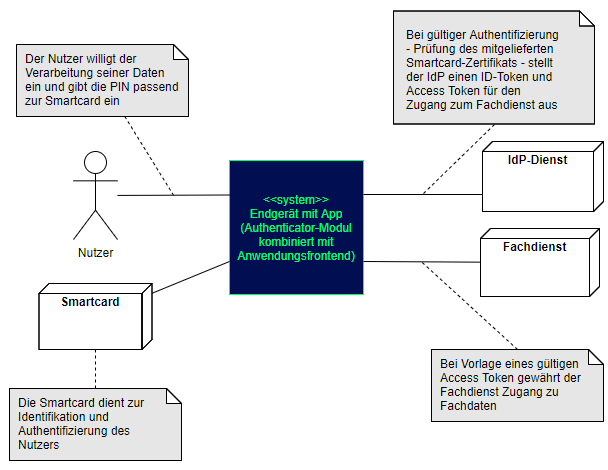
Abbildung 1: Systemkontext aus Sicht des Frontend (bestehend aus Authenticator-Modul und Anwendungsfrontend)
Will ein Nutzer mit seinem Anwendungsfrontend auf einen Fachdienst zugreifen, kann dieser Zugriff nicht direkt erfolgen. Das Authenticator-Modul übernimmt den Aufruf und schickt diesen an den Authorization-Endpunkt. Der Authentifizierungsprozess des Nutzers verläuft zwischen dem Authenticator-Modul und dem IDP-Dienst. Bei einem positiven Verlauf der Authentifizierung liefert das Authenticator-Modul einen Authorization-Code an das Anwendungsfrontend. Gegen Vorlage dieses Codes erhält das Anwendungsfrontend vom IDP-Dienst sowohl einen ID_TOKEN als auch einen ACCESS_TOKEN. Das Anwendungsfrontend liefert den ACCESS_TOKEN an den Fachdienst und erhält bei positiver Validierung des Tokens Zugang zu den Fachdienstdaten.
Die Beschreibung der einzelnen Prozessschritte ist im Dokument [] enthalten.
Die Beschreibung der einzelnen Akteure und Rollen ist im Dokument [] enthalten.
Als Nachbarsysteme des Anwendungsfrontends sind das Authenticator-Modul (nur logisch innerhalb einer Anwendung vom Anwendungsfrontend getrennt), der IDP-Dienst (siehe [gemSpec_IDP_Dienst]) sowie die mit dem IDP-Dienst in Verbindung stehenden Fachdienste (siehe [gemSpec_IDP_FD]) zu nennen. Des Weiteren können das Authenticator-Modul und das Anwendungsfrontend als Teil eines Primärsystems realisiert werden. Die Nachbarsysteme ändern sich dadurch nicht.
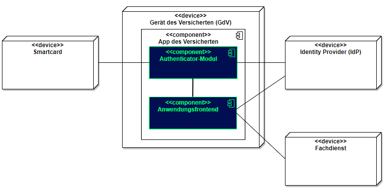
Abbildung 2: Systemüberblick mit Nachbarsystemen
Das Frontend lässt sich in zwei Module aufteilen: in ein Authenticator-Modul und ein Anwendungsfrontend (GUI), welche in einer Applikation kombiniert sind. Bei der Nutzung innerhalb eines Primärsystems kann das Primärsystem auch vollständig die Funktionalität des Authenticator-Moduls übernehmen. Die Aufteilung in unterschiedliche Module existiert nur logisch, aber nicht in Form von unterschiedlichen Anwendungen.
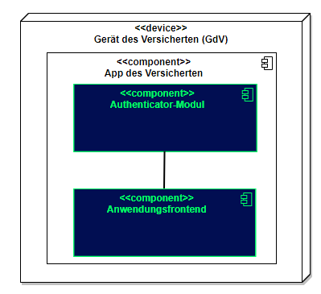
Abbildung 3: Zerlegung des Frontends
Authenticator-Modul
Das Authenticator-Modul bietet die Schnittstelle zum IDP-Dienst an und ist gemeinsam mit dem Anwendungsfrontend in einer mobilen App kombiniert. Für Primärsysteme muss das Authenticator-Modul als Bestandteil des Primärsystems implementiert werden (siehe [gemILF_PS_eRp]). Als Primärsysteme sollen hier PVS (ärztliche und zahnärztliche Praxisverwaltungssystem), KIS (Krankenhausinformationssystem) und AVS (Apothekenverwaltungssystem) genannt sein. Die Beschreibung des Authenticator-Moduls erfolgt in diesem Dokument, weil das Authenticator-Modul einen wesentlichen Bestandteil des Nutzer-Endgerätes/Gerät des Versicherten (GdV) darstellt und somit nicht in der zentralen Providerzone der Telematikinfrastruktur betrieben wird. Authenticator-Modul und Anwendungsfrontend werden in diesem Zusammenhang als ortsveränderliche Komponenten auf unsicheren Endgeräten betrachtet.
Anwendungsfrontend
Das Anwendungsfrontend ist eine Software, welche innerhalb der Telematikinfrastruktur lesend oder schreibend auf die Daten der Fachdienste zugreift.
Die Beschreibung der theoretisch möglichen Verwendung unterschiedlicher Authenticator-Modul-Profile bleibt hier aus, da durch das beschriebene Authenticator-Modul ausschließlich ein einziger IDP-Dienst adressiert wird. Es ist somit für den IDP-Dienst der TI ausschließlich ein einziges Authenticator-Modul zugelassen. Die gematik behält sich das Recht vor, hieran Änderungen vorzunehmen.
Abbildung 4: Verteilungssicht beim Einsatz eines mobilen Endgerätes
Teilsysteme (Module der App des Versicherten) sind zusammen auf einem Gerät, aber niemals auf mehreren Geräten verteilt, vorhanden. Als Liste der möglichen Teilsysteme seien die folgenden genannt:
Hinweis: Die beiden Teilsysteme Authenticator-Modul und Anwendungsfrontend können in zukünftigen Versionen ggf. auch auf getrennten Endgeräten <<device>> betrieben werden.
Bei der Nutzung eines stationären Endgerätes und eines Primärsystems, sind das Authenticator-Modul und das Anwendungsfrontend Teil des Primärsystems.
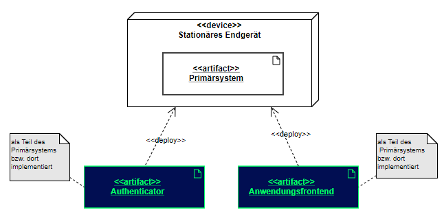
Abbildung 5: Verteilungssicht beim Einsatz eines stationären Endgerätes und eines Primärsystems
In jedem Fall benötigt jeder Nutzer genau ein Endsystem, auf welchem das Authenticator-Modul gemeinsam mit dem Anwendungsfrontend installiert und eingerichtet ist.
Anwendungsfrontends und das Authenticator-Modul nutzen TLS-Verbindungen für die Kommunikation zu den Diensten der TI.
Das Anwendungsfrontend und das Authenticator-Modul ermitteln die Informationen zu den Endpunkten des Identity Providers aus dem Discovery Document.
A_20606
Das Anwendungsfrontend MUSS mit dem IDP-Dienst über TLS kommunizieren. <=
A_20607
Das Authenticator-Modul MUSS mit dem IDP-Dienst der TI über TLS kommunizieren. <=
A_20608
Das Anwendungsfrontend MUSS bei jedem Verbindungsaufbau den IdP-Dienst anhand seines TLS-Zertifikats authentifizieren und MUSS die Verbindung ablehnen, falls die Authentifizierung fehlschlägt. <=
A_20609
Das Authenticator-Modul MUSS bei jedem Verbindungsaufbau den IDP-Dienst anhand seines TLS-Zertifikats authentifizieren und MUSS die Verbindung ablehnen, falls die Authentifizierung fehlschlägt. <=
A_20610
Das Authenticator-Modul MUSS in allen HTTP-Requests an den IDP-Dienst den HTTP-Header „user-agent“ gemäß [RFC7231] mit <Hersteller-ID> <Produktkürzel>/<Produktversion> gemäß der Produktidentifikation des E-Rezept-FdV befüllen. <=
A_20612
Das Authenticator-Modul MUSS die Fehlermeldung des IDP-Dienstes an den Benutzer durchreichen, wenn dieser die Durchführung des Authentifizierungsprozesses ablehnt. <=
Das Authenticator-Modul ist ein Modul, welches gemeinsam mit dem Anwendungsfrontend in einer Applikation für mobile Endgeräte wie Smartphones bereitgestellt wird. Bei Nutzung eines Primärsystems wird die Funktionalität des Authenticator-Moduls vom Primärsystem selbst realisiert.
Die Bereitstellung der Anwenderfrontends erfolgt über die dem jeweiligen Betriebssystem üblicherweise zur Verfügung stehenden Portale in einer sicheren, für den Nutzer kostenfreien Form. Im Falle des Betriebssystems Android erfolgt die Bereitstellung im Google Play Store oder dem zukünftig für dieses Betriebssystem etablierten Portal.
Für das Betriebssystem iOS findet die sichere Bereitstellung im Apple App Store statt, wobei dem Nutzer auch hier keine Kosten durch den Abruf der Software entstehen dürfen.
Aufgabe des Authenticator-Moduls ist, die von einem Anwendungsfrontend zum Zugriff auf Fachdienste benötigten ID_TOKEN, ACCESS_TOKEN und SSO_TOKEN mit Zustimmung des Nutzers (Resource Owner) und nach eingehender Überprüfung dessen Identität am Authorization-Endpunkt zu beantragen. Hierfür wird vom Authorization-Endpunkt ein AUTHORIZATION_CODE ausgestellt, der vom Authenticator-Modul an das Anwendungsfrontend übergeben wird. Das gleichzeitig vom Authorization-Endpunkt übergebene SSO_TOKEN wird vom Authenticator-Modul selbst gespeichert und wird von diesem für einen zukünftigen Authentifizierungsprozess ohne erneute Abfrage der Zugangsdaten des Nutzers verwendet. Das SSO-Token erfüllt hier die Funktion eines Refresh-Token. Durch Übergabe des AUTHORIZATION_CODE erhält das Anwendungsfrontend am Token-Endpunkt das ID_TOKEN und ACCESS_TOKEN.
Die für die Beantragung des ID_TOKEN und ACCESS_TOKEN notwendigen Informationen bekommt das Authenticator-Modul vom Anwendungsfrontend übergeben. Weitere Informationen bezieht das Authenticator-Modul mittels Near Field Communication-Schnittstelle (NFC) von einer Smartcard. Die notwendige elektronische Signatur im Challenge-Response-Verfahren ruft das Authenticator-Modul ebenfalls von der Smartcard ab und fordert hierbei den Nutzer zur PIN-Eingabe auf. Im Fall eines Primärsystems erfolgt diese Aktion ohne Interaktion mit dem Nutzer im Hintergrund. Weitere nicht normative Informationen hierzu finden sich im Kapitel .
A_20613
Das Authenticator-Modul MUSS das Discovery Document [RFC8414] bei eingeschaltetem Gerät regelmäßig alle 24 Stunden einlesen und auswerten, und danach die darin aufgeführten URI zu den benötigten öffentlichen Schlüsseln (Public Keys – PUK) und Diensten verwenden. <=
A_20614
Das Authenticator-Modul MUSS die Signatur des Discovery Document mathematisch prüfen und auf ein zeitlich gültiges C.FD.SIG-Zertifikat mit der Rollen-OID oid_idpd zurückführen können, welches von einer ihm bekannten Komponenten-PKI ausgestellt wurde. <=
Details zur Aktualisierung und sicheren Aufbewahrung der Komponenten-CAs finden sich in .
Details zur Kodierung der Signatur des Discovery Document finden sich in [gemSpec_IDP_Dienst#Kapitel 5.1.3 Schutz des Discovery Document].
Schnittstellen des Authenticator-Moduls sind diejenigen, an welchen es Anfragen durch das Anwendungsfrontend empfängt und jene, welche das Authenticator-Modul selbst verwendet, um mit dem Authorization-Endpunkt des IDP-Dienstes in Kontakt zu treten.
Das Authenticator-Modul nimmt die Authentifizierungs-Anfrage des Anwendungsfrontends entgegen und nutzt den Authorization-Endpunkt des IDP-Dienstes, um die Anfrage einzureichen. Der Authorization-Endpunkt des IDP-Dienstes antwortet – nach positiver Validierung der Anfrage – mit einem AUTHORIZATION_CODE. Das Authenticator-Modul nimmt den AUTHORIZATION_CODE und leitet diesen an das Anwendungsfrontend weiter. Nachfolgende Abbildung skizziert die Schnittstellen des Authenticator-Moduls. Komponenten und Schnittstellen, welche nicht direkt vom Authenticator-Modul genutzt werden, sind in der Abbildung grau hinterlegt.
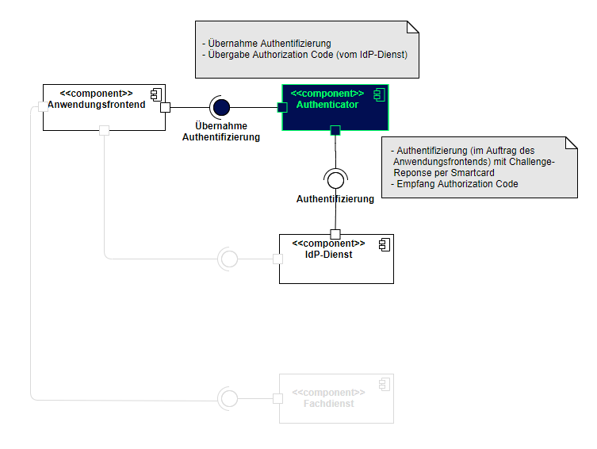
Abbildung 6: Schnittstellen des Authenticator-Moduls
Eingehende Daten am Authenticator-Modul stammen vom IDP-Dienst und wurden dort zuvor mit dem aktuellen Signaturzertifikat signiert. Zusätzlich wird die Integrität durch den TLS-Kanal geschützt.
A_20917
Das Authenticator-Modul MUSS vor der Übertragung des Authorization Request (siehe [A_20601]) überprüfen, ob noch ein gültiges SSO_TOKEN im Dateisystem (siehe [A_20499-*]) vorhanden ist.
Ist ein solches SSO_TOKEN im Dateisystem vorhanden, MUSS das Authenticator-Modul dieses SSO_TOKEN an den Authorization-Endpunkt senden.
Ist kein solches SSO_TOKEN im Dateisystem vorhanden, MUSS das Authenticator-Modul die Anfrage gemäß [A_20601] fortsetzen und somit einen neuen Authentifizierungsprozess einleiten. <=
Hinweis: Die Prüfung der Gültigkeit des SSO_TOKEN ergibt sich aus dessen maximaler Gültigkeitsdauer, welche je nach Fachdienst unterschiedlich sein kann und insgesamt durch den Anbieter des IDP-Dienstes eingegrenzt ist. Eine Integritätsprüfung des SSO_TOKEN ist nicht möglich, weil das SSO_TOKEN für den Authorization-Endpunkt mit dessen öffentlichen Schlüssel verschlüsselt ist.
A_20601
Das Authenticator-Modul MUSS den Authorization-Request, welchen dieses vom Anwendungsfrontend erhalten hat, an den Authorization-Server des IdP-Dienstes schicken. Der Authorization-Request MUSS folgende Parameter enthalten:
Der Aufbau der Anfrage entspricht [gemSpec_IDP_Dienst#Kapitel 7.1 Authorization Request].
A_20600
Das Authenticator-Modul MUSS den user_consent und den CHALLENGE_TOKEN vom Authorization-Endpunkt des IDP-Dienstes entgegennehmen. <=
Hinweis 1: Der Authorization-Endpunkt des IDP-Dienstes, welcher die Nutzerauthentifizierung durchführt und für die Ausstellung des AUTHORIZATION_CODE zuständig ist, liefert den user_consent und das CHALLENGE_TOKEN als Antwort auf den Authorization-Request des Authenticator-Moduls.
Hinweis 2: Der Aufbau der Antwort und des CHALLENGE_TOKEN entspricht [gemSpec_IDP_Dienst#Kapitel 7.2 Authorization Response].
A_20525
Das Authenticator-Modul MUSS im Zusammenhang mit der PIN-Abfrage für die Signatur des CHALLENGE_TOKEN durch die Smartcard im selben Dialog die Consent-Freigabe des user_consent durch den Nutzer einfordern, damit dieser durch die PIN-Eingabe seine Willenserklärung abgibt und der Verwendung seiner Daten in diesen Claims zustimmt. <=
Hinweis: Bei Primärsystemen kann auf eine erneute PIN-Eingabe und Consent-Freigabe verzichtet werden, solange sich die SMC-B im freigeschalteten Modus befindet.
A_19908-01
Das Authenticator-Modul MUSS die Signatur des CHALLENGE_TOKEN gegen den aktuellen öffentlichen Schlüssel des Authorization-Endpunktes PUK_AUTH prüfen. Liegt dem Authenticator-Modul der öffentliche Schlüssel des Authorization-Endpunktes noch nicht vor, MUSS es diesen vom Authorization Server gemäß den Angaben der Adresse PUK_URI_AUTH im Discovery Document abrufen. <=
Das Authenticator-Modul wird vom Anwendungsfrontend zur Authentifizierung gegenüber dem IDP-Dienst herangezogen. Das Anwendungsfrontend ist eine beim IDP-Dienst als "OpenID Connect-Client" registrierte Software. Das Anwendungsfrontend erhält seinerseits bei der Registrierung am IDP-Dienst einen eindeutigen Identifier.
Da sich Authenticator-Modul und Anwendungsfrontend immer auf ein und demselben Endgerät des Nutzers befinden, ist es nicht notwendig, dass der IDP-Dienst deren Adressierung im Voraus kennt. Will nun das Anwendungsfrontend einen Zugriff auf den entsprechenden Fachdienst initiieren, leitet es eine Anfrage an die vom IDP-Dienst bekanntgegebene URI. Die Anfrage wird innerhalb der Anwendung dem Authenticator-Modul zugewiesen. Das Authenticator-Modul bereitet die Anfrage auf und prüft, ob alle Voraussetzungen erfüllt sind. Dann leitet das Authenticator-Modul die Anfrage an den Authorization-Endpunkt des IDP-Dienstes weiter. Der IDP-Dienst erzeugt eine session_id und fordert (im Falle eines mobilen Endgerätes) vom Authenticator-Modul die Signatur einer CHALLENGE durch das vorgesehene Identifikationsmittel. Im Falle eines Versicherten die eGK, und im Falle einer Leistungserbringerinstitution die SM-B welche über das Primärsystems durch die Operation ExternalAuthenticate des Konnektors gemäß [gemSpec_Kon#4.1.13.4] bzw. [gemILF_PS#4.4.6.1] angesprochen wird. Das Token wird hierbei nicht selbst signiert, sondern der darüber gebildete HASH-Wert (siehe Abschnitt in diesem Dokument).
A_20700-07
Das Authenticator-Modul MUSS die vom Authorization-Endpunkt empfangene CHALLENGE_TOKEN mit dem Zertifikat C.CH.AUT aus der Smartcard des Nutzers signieren. Hierbei wird der über die CHALLENGE_TOKEN gebildete HASH-Wert zur Signatur überreicht (siehe Abschnitt in diesem Dokument).
Im Fall der Authentisierung mit einem alternativen Authentisierungsmittel signiert das Authenticator-Modul die folgenden Daten mithilfe des PrK_SE_AUT:
Tabelle 1: Belegung des amr-Claims durch das Authenticator-Modul
| Art | Authentication-Method-Reference ("amr") |
|---|---|
| Biometrisch | ["mfa","hwk","generic-biometric"] |
| PIN | ["mfa","hwk","kba"] |
| Passwort | ["mfa","hwk","kba"] |
| Muster | ["mfa","hwk","kba"] |
Hinweis: Der Datentyp "Signed_Authentication_Data" ist in Anhang C des Dokuments [gemSpec_IDP_Dienst] beschrieben.
A_20526-01
Das Authenticator-Modul MUSS das eingereichte CHALLENGE_TOKEN mittels JWS (JSON Web Signature) mit der Smartcard signieren, und das Authentifizierungszertifikat der verwendeten Smartcard als x5c Parameter einbetten. Dieses Objekt mittels JWE (JSON Web Encryption) mit dem öffentlichen Schlüssel des Authorization-Endpunktes PuK_IDP_ENC verschlüsseln und in Form eines HTTP-POST-Requests an den Authorization-Endpunkt senden.
<=
Hinweis 1: Das Signieren und Verschlüsseln des CHALLENGE_TOKEN ist durch die Verwendung eines Nested JWT [angelehnt an den folgenden Draft: https://tools.ietf.org/html/draft-yusef-oauth-nested-jwt-03 zu realisieren. Im cty-Header ist "NJWT" zu setzen, um anzuzeigen, dass es sich um einen Nested JWT handelt. Das Signieren wird dabei durch die Verwendung einer JSON Web Signature (JWS) [RFC7515 # section-Compact Serialization] gewährleistet. Die Verschlüsselung des signierten Token wird durch die Nutzung der JSON Web Encryption (JWE) [RFC7516 # section-3] sichergestellt. Als Verschlüsselungsalgorithmus ist ECDH-ES (Elliptic Curve Diffie-Hellman Ephemeral Static key agreement) vorgesehen.
Hinweis 2: Der Aufbau der Anfrage entspricht [gemSpec_IDP_Dienst#Kapitel 7.3 Authentication Request].
A_20527
Das Authenticator-Modul MUSS den vom Authorization-Endpunkt empfangenen AUTHORIZATION_CODE an das Anwendungsfrontend übertragen. <=
Hinweis 1: Der Authorization-Endpunkt liefert den AUTHORIZATION_CODE gemeinsam mit dem SSO_TOKEN" innerhalb einer HTTP-Redirection (HTTP-Status Code 302) an das Authenticator-Modul zurück. Der Wert des Attributs location der HTTP 302 Response ist die vom Anwendungsfrontend beim mobilen Betriebssystem registrierte URI. Beim Aufruf der URI wird automatisch das Anwendungsfrontend mit der Verarbeitung der URI gestartet.
Hinweis 2: Der Aufbau der Header entspricht [gemSpec_IDP_Dienst#Kapitel 7.4 Authentication Response].
A_20284
Das Authenticator-Modul MUSS das vom Token-Endpunkt ausgegebene SSO_TOKEN in der HTTP/1.1 Statusmeldung 302 verarbeiten. Das Authenticator-Modul MUSS das SSO_TOKEN ablehnen, wenn dieses außerhalb der mit dem Token-Endpunkt etablierten TLS-Verbindung übertragen wird. <=
Hinweis: Der IDP-Dienst hat das SSO_TOKEN mit dem privaten Schlüssel PRK_AUTH für sich signiert und verschlüsselt. Das Authenticator-Modul kann und braucht den Inhalt des Tokens nicht zu lesen. Durch die Vorlage des SSO_TOKEN kann bei Bedarf ein neuer AUTHORIZATION_CODE am Authorization-Endpunkt ohne die erneute Authentisierung des Nutzers erzeugt werden.
A_21322
Das Authenticator-Modul MUSS empfangene SSO-Token gegen unberechtigten Zugriff schützen. <=
A_20499-01
Das Authenticator-Modul MUSS SSO_TOKEN löschen, wenn der Anwender einen aktiven Logout durchführt. Dazu MUSS das Authenticator-Modul dem Anwender eine auslösende Funktionalität anbieten.
<=
Die im Abschnitt beschriebenen Schnittstellen des Authenticator-Moduls werden durch das Anwendungsfrontend genutzt. Die Nutzung durch das Anwendungsfrontend erfolgt hierbei zwangsläufig vom gleichen Gerät aus.
Die verwendeten Standards sind:
Das Authenticator-Modul greift auf die NFC-Schnittstelle des Nutzer-Endgerätes oder auf einen angeschlossenen Smartcard-Reader zu, um das nonQES-Signatur-Zertifikat auszulesen und gegen Einforderung der PIN-Eingabe im Challenge-Response-Verfahren eine Signatur auszulösen.
Das Endgerät des Nutzers muss in der Lage sein über NFC mit der eGK oder dem HBA zu kommunizieren. Die hierfür notwendige Middleware ist als gegebene Voraussetzung anzusehen und somit Bestandteil des Betriebssystems bzw. wird zusammen mit dem Authenticator-Modul installiert und ist insofern durch den Anbieter des IDP-Dienstes bereitzustellen.
Das Authenticator-Modul verwendet bei den in TAB_Authenticator_001 dargestellten Aktivitäten Zertifikate.
Tabelle 2: TAB_Authenticator_001 – Zertifikatsnutzung des Authenticator-Modul
| Aktivität | Zertifikat der TI | Zertifikatstyp | Rollen-OID | Nutzung |
|---|---|---|---|---|
| TLS-Verbindungsaufbau zum IDP-Dienst | nein | TLS Internet Zertifikat | n/a | aktiv |
| Prüfung des Discovery Document | ja | C.FD.SIG | oid_idpd | aktiv |
| Signatur der Challenge des IDP mittels Smartcard | ja | C.CH.AUT C.HP.AUT C.HCI.AUT |
oid_versicherter gemäß [gemSpec_OID#Tab_PKI_402] gemäß [gemSpec_OID#Tab_PKI_403] |
passiv |
A_20617-01
Das Authenticator-Modul MUSS aktiv verwendete Zertifikate (bspw. für den TLS-Verbindungsaufbau), welche auf Root-Zertifikaten aus der TSL basieren, gemäß "TUC_PKI_018" auf Integrität und Authentizität prüfen. Das Authenticator-Modul MUSS die von dem Zertifikat und den darin enthaltenen Attributen (bspw. öffentliche Schlüssel) abhängenden Arbeitsabläufe ablehnen, wenn die Prüfung kein positives Ergebnis ("gültig") liefert. Das Authenticator-Modul MUSS alle öffentlichen Schlüssel, die es verwenden will, auf eine positiv verlaufene Zertifikatsprüfung zurückführen können. <=
Hinweis: "Ein Zertifikat aktiv verwenden" bedeutet im Sinne von [], dass ein Authenticator-Modul einen dort aufgeführten öffentlichen Schlüssel innerhalb einer kryptografischen Operation (Signaturprüfung, Verschlüsselung, Signaturprüfung von öffentlichen (EC)DH-Schlüsseln etc.) nutzt. Erhält ein Authenticator-Modul bspw. einen Access Token, in dem Signaturen und Zertifikate enthalten sind, und behandelt es diesen Token als opakes Datenobjekt, ohne die Zertifikate darin gesondert zu betrachten, dann verwendet das Authenticator-Modul diese Zertifikate im Sinne von [] passiv.
Folgende Vorgaben gelten für die Prüfung von Internet-Zertifikaten.
A_20068-01
Das Authenticator-Modul MUSS das Internet-seitige Zertifikat des IdP-Dienstes prüfen. Hierfür MUSS das Authenticator-Modul sowohl eine Signaturprüfung als auch eine Prüfung der zeitlichen Gültigkeit durchführen. Falls diese Prüfung negativ ausfällt, MUSS es das Zertifikat als "ungültig" bewerten.
Das Authenticator-Modul MUSS das Zertifikat anhand der Signaturprüfung auf ein CA-Zertifikat einer CA, die die "CA/Browser Forum Baseline Requirements for the Issuance and Management of Publicly-Trusted Certificates" (https://cabforum.org/baseline-requirements-documents/) erfüllt, zurückführen können. Ansonsten MUSS es das Zertifikat als "ungültig" bewerten. <=
Hinweis: Eine positiv ausgefallene Signaturprüfung von A_20068-01 ist gleichbedeutend damit, dass das CA-Zertifikat im Zertifikats-Truststore eines aktuellen Webbrowsers vorhanden ist.
A_20618
Das Authenticator-Modul MUSS bei jedem Verbindungsaufbau den IdP-Dienst anhand seines TLS-Zertifikats authentifizieren und MUSS die Verbindungen ablehnen, falls die Authentifizierung fehlschlägt. <=
Hinweis 1: Der IDP-Dienst authentisiert sich mit einem extended-validation-X.509-Zertifikat.
Hinweis 2: Es gelten die Bedingungen für den TLS-Handshake gemäß [gemSpec_PKI#GS-A_4662].
A_20743
Der Anbieter des Authenticator-Moduls MUSS sicherstellen, dass das aktuell verwendete Authenticator-Modul mit den gültigen Zertifikaten der Komponenten-CA der TI arbeitet. Er MUSS ebenfalls hierzu mindestens einmal monatlich einen Abgleich der im Authenticator-Modul eingebundenen Zertifikate mit den in der TSL hinterlegten durchführen. Der Anbieter des Authenticator-Moduls MUSS ein Update veröffentlichen, wenn der Fingerprint der Zertifikate in der TSL nicht mit denen im Authenticator-Modul übereinstimmen. <=
Das Authenticator-Modul realisiert Funktionen zur
Die Erhebung von Gerätedaten obliegt dem Authenticator-Modul; ihre Bewertung dem IDP-Dienst. Die technische Konzeption basiert auf Nutzung der vom Betriebssystem und von der Hardware gebotenen Möglichkeiten zur lokalen Authentisierung und der Realisierung eines geeigneten Schlüsselspeichers. Das Authenticator-Modul setzt im Zuge der Schlüsselerzeugung die notwendigen Parameter. Nicht angestrebt bzw. spezifiziert sind rein Software-basierte Lösungen zur Schlüsselverwaltung oder Authentifizierungsverfahren zur autorisierten Anwendung des privaten Schlüssels, die nicht auf der Kombination von Betriebssystem und Gerätehardware beruhen.
A_21515
Das Authenticator-Modul MUSS im Sinne eines Anwendungsfrontends wie in Abschnitt 7.1 aus [gemSpec_IDP_Frontend] beim IdP-Dienst registriert sein. Sofern das Authenticator-Modul nicht als eigenständige Anwendung auftritt, sondern in ein Frontend integriert ist, erbt das Authenticator-Modul die registrierte client_id des Anwendungsfrontends. <=
A_21573
Das Authenticator-Modul MUSS dem Nutzer die Option zur Registrierung von alternativen Authentisierungsmitteln anbieten. <=
A_21574
Das Authenticator-Modul MUSS dem Nutzer Warnhinweise geben, dass die Sicherheit des Verfahrens bei der Verwendung von Folgendem beeinträchtigt werden kann:
A_21575
Das Authenticator-Modul MUSS zur Einleitung des Registrierungsprozesses ein ACCESS_TOKEN über den IDP-Dienst beziehen. Das ACCESS_TOKEN MUSS erkennen lassen, dass die Authentifizierung direkt auf Basis der eGK oder auf Basis eines SSO_TOKEN erfolgte, das auf Basis einer Authentifizierung mit der eGK ausgestellt wurde. <=
A_21576
Sofern für das verwendete Gerät und Nutzer bereits ein alternatives Authentisierungsmittel registriert ist, MUSS das Authenticator-Modul den Nutzer zur Deregistrierung der Pairing-Daten auffordern. Der Nutzer MUSS jederzeit die Möglichkeit haben, ein von ihm registriertes alternatives Authentisierungsmittel zu erneuern. <=
A_21577
Das Authenticator-Modul DARF KEINE biometrischen Referenzmerkmale erheben, Templates erstellen, speichern, verarbeiten oder diese zum IdP-Dienst übertragen. Das Authenticator-Modul DARF KEINE anderen vom Nutzer gesetzten wissensbasierten Faktoren (z. B. PINs, Muster, Passwörter) erheben, speichern, verarbeiten oder zum IdP-Dienst übertragen und zur Authentifizierung verwenden. <=
A_21578
Das Authenticator-Modul SOLL prüfen, ob biometrische Referenzmerkmale oder wissensbasierte Faktoren auf dem Gerät in einer gesicherten Umgebung gespeichert werden. Hierzu MÜSSEN über Betriebssystem-APIs bereitgestellte Informationen ausgewertet werden. <=
Hinweis: Die Anforderung adressiert keine faktische funktionale Prüfung, sondern eine vorab durchgeführte Auswertung von Informationen, die über Betriebssystem-APIs bereitgestellt werden.
A_21579
Das Authenticator-Modul MUSS sicherstellen, dass die Erzeugung des Schlüsselpaares PrK_SE_AUT/PuK_SE_AUT, dessen Speicherung, Anwendung und die Löschung des PrK_SE_AUT ausschließlich durch eine gesonderte, vertrauenswürdige Ausführungsumgebung erfolgt, die
Hinweis 1: Die Anforderung adressiert keine faktische funktionale Prüfung, sondern eine vorab durchgeführte Auswertung von Informationen, die über Betriebssystem-APIs bereitgestellt werden.
Hinweis 2: Zum Begriff "Ausführungsumgebung" siehe die Erläuterung in Abschnitt [gemSpec_IDP_Dienst#5.4.1 Zielsetzung].
Hinweis 3: Die Anforderung soll ausschließen, dass Implementierungen des Authenticator-Moduls unter ggf. möglicher Umgehung der Betriebssystem-APIs eigene (z. B. Software-basierte) Lösungen implementieren oder, sofern möglich, andere Hardwareeinheiten als die fest im Gerät verbauten verwenden.
Hinweis 4: Im Fall von
A_21580
Das Authenticator-Modul MUSS für die Schlüsselerzeugung des Schlüsselpaars PuK_SE_AUT/PrK_SE_AUT Mechanismen des Geräts verwenden. Es DARF kryptographische Schlüssel NICHT selbst erzeugen, innerhalb des ihm zur Verfügung stehenden Speicherbereichs speichern oder auf Daten anwenden. <=
A_21581
Das Authenticator-Modul MUSS sicherstellen, dass die in der folgenden Tabelle genannten Algorithmen zur Anwendung des PrK_SE_AUT zur Verfügung stehen:
Tabelle 3: Kryptographische Verfahren
| Schema | Algorithmus | Schlüssel |
|---|---|---|
| Signatur | ECDSA auf Basis der Kurve P-256 und SHA-256 | PrK_SE_AUT |
A_21582
Das Authenticator-Modul MUSS dem Nutzer die Wahl einer lokal verfügbaren Authentisierungsmethode überlassen, die zur autorisierten Anwendung des PrK_SE_AUT verwendet wird, das Authenticator-Modul
Tabelle 4: Zugelassene, lokale Authentisierungsmittel
| Art | Faktor | Zugelassen: |
|---|---|---|
| biometrisch | Finger | ja |
| Stimme | ja | |
| Gesicht | ja | |
| Iris | ja | |
| wissensbasiert | PIN | ja |
| Passwort | ja | |
| Muster | ja | |
| Präsenz | Wischen | nein |
| Kopplung mit einer Uhr | nein | |
| Knopfdruck | nein | |
| Körpersensoren | nein |
A_21583
Das Authenticator-Modul MUSS sicherherstellen, dass die von Gerät und Hardware realisierten Mechanismen zur biometrischen Authentisierung bzw. Authentifizierung von ausreichender Qualität sind. <=
Hinweis: Als qualitativ ausreichend werden biometrische Mittel der Güte Biometric.STRONG im Kontext von Android-Implementierungen angesehen (siehe [androidbiom]). Im Fall von Apple-iOS-Geräten sind die vom Gerät implementierten biometrischen Mittel qualitativ ausreichend, wenn das Gerät mit einer Secure-Enclave ausgestattet ist.
A_21584
Das Authenticator-Modul MUSS sich zur Implementierung der Authentifizierungsverfahren zur autorisierten Anwendung des PrK_SE_AUT auf diejenigen Mechanismen beschränken, die durch die Kombination von Betriebssystem und Hardware zur Verfügung gestellt werden. Das Authenticator-Modul DARF hierbei ausschließlich die vom Betriebssystem zur Verfügung gestellte Information über eine erfolgreiche oder nicht-erfolgreiche Authentifizierung und deren Art verarbeiten. <=
A_21585
Das Authenticator-Modul MUSS die Parameter für die Erzeugung des Schlüsselpaars PrK_SE_AUT/PuK_SE_AUT so setzen, dass sichergestellt ist, dass der Schlüssel PrK_SE_AUT ausschließlich über das Authenticator-Modul auf Daten anwendbar ist. Eine App-übergreifende Nutzung MUSS ausgeschlossen werden. <=
A_21586
Das Authenticator-Modul MUSS bei der Übergabe des Kommandos zur Schlüsselerzeugung an das Betriebssystem in den Parametern festlegen, dass bei folgenden Systemereignissen der private Schlüssel PrK_SE_AUT nicht mehr verwendbar ist:
A_21587
Das Authenticator-Modul MUSS die Parameter für die Erzeugung des Schlüsselpaars PrK_SE_AUT/PuK_SE_AUT so setzen, dass sichergestellt ist, dass der Schlüssel PrK_SE_AUT ausschließlich zum Zweck der Signaturbildung auf Daten angewendet werden kann. <=
A_21588
Das Authenticator-Modul MUSS einen Key-Identifier zur Identifikation des Schlüsselpaars PrK_SE_AUT/PuK_SE_AUT gegenüber dem IdP-Dienst erzeugen. Der Key-Identifier MUSS so erzeugt werden, dass die Erzeugung ein und desselben Identifiers über verschiedene Geräte eines Nutzers mit hoher Wahrscheinlichkeit ausgeschlossen ist. Der Key-Identifier MUSS zufällig erzeugt werden. Er DARF NICHT aus Nutzer- oder Gerätedaten abgeleitet werden. Der zum IdP-Dienst übertragene Key-Identifier MUSS eine Länge von 32 Byte besitzen. Der Wert KANN zur Referenzierung des PrK_SE_AUT im lokalen Schlüsselspeicher verwendet werden. Der Key-Identifier selbst oder ein Datenobjekt, aus dem er abgeleitet werden kann, MUSS auf dem Endgerät gespeichert werden. Der Key-Identifier selbst oder das Datenobjekt MUSS gegen Löschung und anwendungsübergreifende Verwendung geschützt sein. <=
Umsetzungshinweis: Lokale Schlüsselspeicher haben ggf. eigene Anforderungen an die Art eines Identifiers. Es wird empfohlen, einen solchen durch einmaliges Anwenden von SHA-256 auf die geforderte Länge zu bringen.
A_21589
Das Authenticator-Modul MUSS ein Schlüsselpaar PrK_SE_AUT/PuK_SE_AUT erzeugen. Das Schlüsselpaar MUSS für die Anwendung des Algorithmus ECDSA auf Basis der Kurve P-256 geeignet sein. Das Authenticator-Modul MUSS hierbei über die Betriebssystem-APIs die in Abschnitt [gemSpec_IDP_Frontend#Parameter für die Schlüsselerzeugung und Auswahl eines Schlüsselspeichers]
beschriebenen Parameter zur Durchsetzung der dort genannten Anforderungen und die Schlüssel innerhalb des dort identifizierten Schlüsselspeichers setzen. <=
A_21590
Das Authenticator-Modul DARF den Schlüssel PrK_SE_AUT ausschließlich zum Zweck der Authentifizierung gegenüber dem IdP-Dienst verwenden. Es DARF dem Nutzer keine andere Option anbieten oder den Schlüssel anderweitig verwenden. <=
Die in folgenden Abschnitt genannten Anforderungen adressieren die Einleitung des Registrierungsprozesses durch das Authenticator-Modul:
A_21591
Das Authenticator-Modul MUSS die folgenden Informationen über das verwendete Gerät über Betriebssystem-APIs erheben:
Hinweis: Die genaue Spezifikation der Schemata ist in den Tabellen "Schema Datentyp "Device_Information"" und "Schema Datentyp "Device_Type"" in [gemSpec_IDP_Dienst], Anhang C dargestellt.
A_21592
Das Authenticator-Modul MUSS den Nutzer auffordern, die entstandenen Pairing-Daten mit dem Schlüssel PrK_CH_AUT der eGK zu signieren. Die Werte der im Datenmodell "Pairing_Data" genannten Claims MÜSSEN wie folgt belegt werden:
Tabelle 5: Pairing-Daten
| Claim | Wert |
|---|---|
| issuer | IssuerDN aus dem Authentifizierungszertifikat C.CH.AUT |
| not_after | Validity/Not_after-Angabe aus dem Authentifizierungszertifikat C.CH.AUT |
| serialnumber | Seriennummer des Authentifizierungszertifikats C.CH.AUT |
| auth_cert_subject_public_key_info | SubjectPublicKeyInfo-Struktur des Authentifizierungszertifikats C.CH.AUT |
| key_identifier | Der erzeugte Identifikator für das Schlüsselpaar PuK_SE_AUT/PrK_SE_AUT |
| product | Der Produktname des verwendeten Geräts |
| se_subject_public_key_info | SubjectPublicKeyInfo-Struktur, bestehend aus dem auf dem Endgerät erzeugten öffentlichen Schlüssel und den zu verwendenden Algorithmen |
A_21593
Das Authenticator-Modul MUSS die signierten Pairing-Daten, die erhobenen Geräteinformationen und das Authentifizierungszertifikat C.CH.AUT zu einer Instanz der Datenstruktur "Registration_Data" gemäß [gemSpec_IDP_Dienst], Abschnitt C, zusammenführen. <=
A_21416
Das Authenticator-Modul MUSS Registrierungsdaten in Form eines "Registration_Data"-Objekts produzieren und diese mit dem PuK_IDP_ENC aus dem Discovery Document verschlüsseln. <=
Hinweis: Der Datentyp "Registration_Data" ist in Anhang C des Dokuments [gemSpec_IDP_Dienst] beschrieben.
A_21414
Das Authenticator-Modul MUSS das zur Autorisierung und Authentifizierung des Nutzers verwendete ACCESS_TOKEN mit dem öffentlichen Schlüssel PuK_IDP_ENC aus dem Discovery Document verschlüsseln.
Dazu muss es vorher unter Verwendung des "Token-Key", der dem Token-Endpunkt übermittelt wurde, entschlüsselt werden.
<=
A_21417
Das Authenticator-Modul überträgt die verschlüsselten Registrierungsdaten zusammen mit dem bezogenen ACCESS_TOKEN an den Pairing-Endpunkt. <=
Hinweis: Das Authenticator-Modul muss den http-Request an den Pairing-Endpunkt wie in Anhang C [gemSpec_IDP_Dienst] beschrieben gestalten.
A_21595
Das Authenticator-Modul MUSS das Authentifizierungszertifikat C.CH.AUT nach erfolgreicher Registrierung für die Verwendung in weiteren Authentifizierungsvorgängen lokal auf dem Endgerät speichern. Die Speicherung MUSS so erfolgen, dass eine missbräuchliche Verwendung des Zertifikats durch andere Anwendungen in ausreichendem Maß verhindert wird. Das Authenticator-Modul DARF im Fall einer nicht erfolgreichen Registrierung das Authentifizierungszertifikat C.CH.AUT NICHT speichern. <=
Hinweis: Unter einer missbräuchlichen Verwendung wird eine von der Verwendung des C.CH.AUT zur Authentifizierung am IDP-Dienst abweichende Verwendung verstanden.
A_21596
Das Authenticator-Modul KANN den vom Nutzer vergebenen Namen des Geräts lokal speichern. <=
A_21597
Das Authenticator-Modul MUSS dem Nutzer eine eindeutige Rückmeldung über entweder die erfolgreiche Anlage eines Pairing oder die Ablehnung der Anlage eines Pairing geben. Beruht die Ablehnung auf einem als nicht geeignet erkannten Gerätetyps, MUSS dem Nutzer dieser Umstand dargelegt werden. <=
A_21598
Das Authenticator-Modul MUSS bei fehlschlagender Registrierung alle lokal erzeugten Daten (einschließlich der erzeugten kryptographischen Schlüssel) über die Betriebssystem-APIs des Geräts löschen. <=
A_21599
Das Authenticator-Modul MUSS dem Nutzer die Option zur Verwendung von alternativen Authentisierungsmitteln anbieten, sofern solche zur Verfügung stehen und am Pairing-Endpunkt registriert wurden. <=
A_21430
Das Authenticator-Modul MUSS dem Benutzer die Authentisierung auf Basis der registrierten Informationen anbieten. Die Initiierung MUSS in gleicher Weise wie der in Abschnitt 6.2.1 [gemSpec_IDP_Frontend] dargestellte Authorization-Request erfolgen.
Der Authorization-Request MUSS vom Authorization-Endpunkt in der gleichen Weise behandelt werden. <=
A_21600
Das Authenticator-Modul MUSS aktuelle Geräteinformationen über die Betriebssystem-APIs einholen und dabei eine Device-Information-Struktur wie in [gemSpec_IDP_Dienst} Abschnitt C beschrieben konstruieren. <=
Hinweis: Anforderungen an die Gestaltung der Signatur der vom Authorization-Endpunkt des IDP-Dienstes übermittelten Challenge und die hierbei zu signierenden Daten finden sich in .
A_21431
Das Authenticator-Modul MUSS die produzierte Signed_Authentication_Data-Struktur mit dem PuK_IDP_ENC aus dem Discovery Document verschlüsseln und an den Authorization-Endpunkt als Antwort auf die vom Authorization-Endpunkt empfangene Challenge übermitteln. Der Wert des Header-Claims exp der hierbei produzierten "Encrypted_Authentication_Data"-Struktur MUSS hierbei identisch mit dem gleichnamigen Claim aus den Body-Claims des empfangenen Challenge-Token belegt werden. <=
Hinweis: Die Struktur des Datentyps "Encrypted_Authentication_Data" ist in Anhang C des Dokuments [gemSpec_IDP_Dienst] beschrieben.
A_21601
Das Authenticator-Modul MUSS die Fehlermeldungen des Authorization-Endpunkts bei Fehlschlag der Authentifizierung dem Nutzer anzeigen. <=
Die Inspektionsfunktion gestattet dem Nutzer die folgenden lokal gespeicherten Daten einzusehen:
Motivation: Die Funktion macht dem Nutzer eine erfolgte Registrierung und die zur Anwendung von alternativen Authentisierungsmitteln auf seinem Gerät gespeicherten Daten transparent.
A_21602
Das Authenticator-Modul MUSS dem Nutzer bei erfolgter Registrierung seines Geräts diesen Umstand anzeigen und darstellen welche Daten zur Verwendung von alternativen Authentisierungsmittel auf seinem Gerät gespeichert sind. <=
Dem Nutzer wird durch die Löschung der folgenden Daten die Möglichkeit gegeben, ein von ihm registriertes Pairing zu deaktivieren. Die Löschung umfasst:
Die Durchführung der Löschung führt zu einer Deaktivierung des Pairings, nicht aber zum Entfernen der Pairing-Daten am Pairing-Endpunkt. Der Benutzer wird über den Fortbestand der dort vorhandenen Daten informiert.
Motivation: Die Realisierung der Funktion soll dem Nutzer ohne eine bestehende Verbindung mit dem IDP-Dienst eine Deaktivierung des von ihm registrierten alternativen Authentisierungsmittels ermöglichen.
A_21603
Das Authenticator-Modul MUSS dem Nutzer die Möglichkeit geben, lokal gespeicherte Daten dauerhaft zu löschen und über Betriebssystem-APIs des Geräts eine Löschung des PrK_SE_AUT auszulösen. Die Löschung MUSS eventuell vorhandene SSO_TOKEN mit einbeziehen. <=
A_21604
Das Authenticator-Modul MUSS den Nutzer bei der lokalen Löschung seiner Registrierungsdaten darauf hinweisen, dass eine zukünftige Anmeldung hiermit ausgeschlossen ist, aber die Daten weiterhin am IdP-Dienst hinterlegt sind. Es MUSS den Benutzer darauf hinweisen, dass ein Entfernen über die am Pairing-Endpunkt realisierte Deregistrierungsfunktion erfolgen kann. <=
A_21605
Das Authenticator-Modul MUSS dem Nutzer die Möglichkeit zur Inspektion der am Pairing-Endpunkt gespeicherten Pairing-Daten und zur Deaktivierung der Pairing-Daten geben. <=
A_21442
Die Authentisierung des Nutzers und die Autorisierung des Authenticator-Moduls am Pairing-Endpunkt zur Nutzung der Inspektions- und Deregistrierungsfunktion MUSS über den IDP-Dienst auf Basis eines von ihm erstellten ACCESS_TOKEN erfolgen. Der Scope der Anfrage ist „openid pairing“.
<=
A_21443
Das zur Authentifizierung des Nutzers und Autorisierung des Authenticator-Moduls verwendete ACCESS_TOKEN MUSS vom Authenticator-Modul mit dem öffentlichen Schlüssel PuK_IDP_Enc aus dem Discovery Document verschlüsselt werden.
<=
A_21444
Das Authenticator-Modul MUSS das bezogene ACCESS_TOKEN an den Pairing-Endpunkt übertragen. Die hierbei verwendeten Request-Parameter MÜSSEN um einen Indikator erweitert werden, die die Nutzung der Inspektionsfunktion anzeigen. <=
Hinweis: Das Authenticator-Modul muss den http-Request an den Pairing-Endpunkt wie in Anhang C, [gemSpec_IDP_Dienst] beschrieben gestalten.
A_21608
Das Authenticator-Modul MUSS dem Nutzer die Möglichkeit zur Deaktivierung jedes der angezeigten Pairing-Daten geben. <=
A_21446
Das Authenticator-Modul MUSS den Key-Identifier des zur Löschung angefragten Pairings zusammen mit einem ACCESS_TOKEN an den Pairing-Endpunkt übertragen. <=
Hinweis: Das Authenticator-Modul muss den http-Request an den Pairing-Endpunkt wie Anhang C, [gemSpec_IDP_Dienst] beschrieben gestalten.
A_21607
Das Authenticator-Modul MUSS die in der Antwort des Pairing-Endpunkts enthaltenen Pairing-Daten auf der Nutzeroberfläche abbilden. Die Anzeige MUSS pro Pairing-Eintrag die folgenden Daten enthalten:
A_21617
Das Authenticator-Modul MUSS dem Benutzer das Ergebnis der Deregistrierung des von ihm gewählten Pairing auf der Benutzeroberfläche anzeigen. Es MUSS anzeigen,
Im Rahmen der Zugänglichmachung des E-Rezepts für Versicherte ohne NFC-fähige eGK sollen ab dem 01.01.2022 Kassen-eigene Authentifizierungssysteme an das E-Rezept angebunden werden. Diese werden im Folgenden als sektorale Identity Provider bezeichnet, um sie vom zentralen IDP-Dienst abzugrenzen, welcher die Authentisierung der Nutzer direkt oder indirekt über die eGK realisiert und die bereitgestellten Attribute von dieser ableitet.
Zur Einbindung eines sektoralen Identity Provider wird im ersten Schritt der zentrale IDP-Dienst als Mittler zwischen dem Anwendungsfrontend, den sektoralen Identity Providern und den Fachdiensten (primär dem E-Rezept) eingesetzt.
Dies wird später mit der Etablierung einer Föderation von Identity Providern abgelöst.
Im Kontext der vorliegenden Spezifikation wird angenommen, dass zu einem sektoralen Identity Provider-Dienst mindestens ein dediziertes Authenticator-Modul existiert, welches in der Lage ist, die Authentifizierung eines Nutzers zu übernehmen, d. h. den Nutzer mit spezifischen Methoden gegenüber dem sektoralen Identity Provider-Dienst zu authentifizieren und eine hiernach vom sektoralen Identity Provider-Dienst produzierte Attestierungen in Form eines AUTHORIZATION_CODE über das Authenticator-Modul an den anfragenden IDP-Dienst zurückzugeben. Unter einem sektoralen Authenticator-Modul werden hierbei eigenständige Anwendungen auf dem Endgerät des Benutzers verstanden. Die Delegierung der Authentifizierung an ein Authenticator-Modul und den zugehörigen sektoralen Identity Provider erfolgt auf Initiative des Nutzers.
Zur Realisierung des in [gemSpec_IDP_Sek#] definierten Flows einschließlich der hierbei erforderlichen Übergabe des AUTHORIZATION_CODE und anderer Daten, bedürfen eines wechselseitigen Aufrufs zwischen dem Authenticator-Modul des IDP-Dienstes und dem gewählten Authenticator-Modul des sektoralen Identity Provider. Dies wird im Folgenden als App2App-Kommunikation bezeichnet (siehe [RFC8252], Abschnitt "7.2. Claimed "https" Scheme URI Redirection", https://datatracker.ietf.org/doc/html/rfc8252#section-5). Die genaue Interaktionsform ist von den Spezifika des verwendeten Betriebssystems abhängig.
A_22424
Im Falle der Nutzung von alternativen Authentisierungsanwendungen MUSS der Authenticator des IDP-Dienstes sicherstellen, dass die Einwilligung des Nutzers zur Datenverarbeitung durch den Anbieter des IDP-Dienstes eingeholt wird und nur nach dessen Zustimmung der Anwendungsfall ermöglicht werden kann. <=
A_22296
Das Authenticator-Modul des IDP-Dienstes MUSS die Liste der bekannten alternativen Authentisierungsanwendungen unter der im Discovery Document des IDP-Dienstes unter "kk_app_list_uri" gefundenen Adresse beziehen und ihre Integrität prüfen.
Die Signatur des unter "kk_app_list_uri" heruntergeladenen JWS muss mathematisch geprüft und auf ein zeitlich gültiges C.FD.SIG-Zertifikat mit der Rollen-OID "oid_idpd" zurückgeführt werden, welches von einer dem Authenticator-Modul bekannten CA der Komponenten-PKI ausgestellt wurde. <=
A_22294
Das Authenticator-Modul des IDP-Dienstes MUSS dem Nutzer die Option zur Verwendung von sektoralen Identity Providern zur Authentisierung ermöglichen. Hierzu MÜSSEN ihm die Namen "kk_app_name" der verfügbaren alternativen Authentisierungsanwendungen, aus der zuvor heruntergeladenen Liste, in nachvollziehbarer Form auf der Benutzeroberfläche dargestellt und ihm eine Auswahl angeboten werden. <=
A_22295
Bei Auswahl eines sektoralen Identity Provider durch den Nutzer MUSS das Authenticator-Modul des IDP-Dienstes einen Authorization-Request an den Third-Party Authorization Endpoint des IDP-Dienstes senden. Der Authorization Request entspricht der in [gemSpec_IDP_Dienst#7.1] genannten Form, aber MUSS um einen weiteren Parameter "kk_app_id" ergänzt werden, dessen Wert dem Identifikator (kk_app_id) des Authenticator-Moduls eines sektoralen IDP-Dienstes entspricht, welcher zum vom Benutzer ausgewählten Namen (kk_app_name) gehört. <=
A_22299
Im Falle der Nutzung von alternativen Authentisierungsanwendungen MUSS das Authenticator-Modul des IDP-Dienstes die Antwort des IDP-Dienstes als Authorization Request an die in der target_url des redirect enthaltene URI weiterleiten und sich dabei den verwendeten "state" Parameter merken, um später erhaltene Antworten des sektoralen Identity Provider zuzuordnen. <=
Hinweis: Es wird hierbei angenommen, dass auf dem Endgerät des Nutzers ein zum sektoralen Identity Provider gehörendes Authenticator-Modul existiert, das für die angegebene URL als Handler registriert ist.
A_22313
Das Authenticator-Modul des IDP-Dienstes MUSS für Aufrufe zu Authenticator-Modulen sektoraler Identity Provider die Verifikationsmechanismen des Betriebssystems verwenden. Die folgenden Parameter müssen gesetzt sein:
Android: Keine weiteren.
iOS: .universalLinksOnly:false <=
Hinweis: Durch den Verzicht auf die zwingende Nutzung von Universal Links hat der Anbieter des sektoraler Identity Providers die Möglichkeit über die Webseite eine Fehlerbehandlung bei nicht installiertem Authenticator-Modul zu machen.
A_22300
Das Authenticator-Modul des IDP-Dienstes MUSS sich um App-zu-App-Aufrufe zu verarbeiten im Betriebssystem unter der URI https://das-e-rezept-fuer-deutschland.de registrieren. <=
A_22301
Das Authenticator-Modul des IDP-Dienstes MUSS den Authorization Code "AUTHORIZATION_CODE_IDP", den state-Parameter sowie den Parameter "kk_app_redirect_uri", welche mittels App2App-Kommunikation vom Authenticator-Modul des sektoralen Identity Provider übergeben werden, akzeptieren, wenn der state mit dem Wert einer kürzlich vom IDP-Dienst erhaltenen Anfrage übereinstimmt. <=
A_22302
Das Authenticator-Modul des IDP-Dienstes MUSS den empfangenen Authorization Code "AUTHORIZATION_CODE_IDP", den state-Parameter sowie den Parameter "kk_app_redirect_uri" als HTTP-POST an den im Discovery Document referenzierten Third-Party Authorization Endpoint des IDP-Dienstes weiterleiten. <=
Aufgrund der genannten Abhängigkeiten sind zu den folgenden Anforderungen jeweils die geforderten Ausgestaltungen für Android und iOS genannt. Bei beiden Betriebssystemen werden Apps - analog zu web-basierten Anwendungen - über URLs adressiert, die von den installierten Apps beansprucht werden. Die Eindeutigkeit der Zuordnung zwischen URL und App wird in beiden Fällen durch Daten innerhalb der Distribution und unter der URL abrufbaren Informationen hergestellt (sog. Asset-Link-Dateien im Fall von Android bzw. Apple-App-Site-Association-Dateien im Fall Apple/iOS).
A_22349
Der Anbieter des Authenticator-Modul des IDP-Dienstes MUSS sicherstellen, dass die durch das Betriebssystem notwendigen Voraussetzungen für die Funktionsfähigkeit des Authenticator-Moduls des IDP (z.B. Manifest, Entitlement, Dateien im .well-known Verzeichnis der verwendeten Domain aus A_22300) erfüllt sind. <=
A_22291
Das Authenticator-Modul des IDP-Dienstes MUSS zur korrekten Funktion der App2App-Kommunikation in seiner Android-Distribution in seinem Manifest mindestens den folgenden Intent aufnehmen:
| Objekt | Ausgestaltung | Ergänzung |
|---|---|---|
| AndroidManifest.xml/Intent | <intent-filter android:autoVerify="true"> <action android:name="android.intent.action.VIEW" /> <category android:name="android.intent.category.DEFAULT"/> <category android:name="android.intent.category.BROWSABLE"/> <data android:scheme="https" android:host="https://das-e-rezept-fuer-deutschland.de"/> </intent-filter> |
Das Flag "autoVerfiy" MUSS auf "true" gesetzt werden. Der Parameter <URL> MUSS dem beim zentralen IDP-Dienst registrierten Wert entsprechen. |
Hinweis: Das gesetzte Flag ist notwendige Voraussetzung für die Etablierung der App als Default Handler für die im Host-Parameter genannten URL.
A_22292
Das Authenticator-Modul des IDP-Dienstes MUSS zur korrekten Funktion der App2App-Kommunikation in seiner iOS-Distribution mindestens das folgende Entitlement aufnehmen:
| Objekt | Inhalt |
|---|---|
| *.entitlement | <?xml version="1.0" encoding="UTF-8"?> <!DOCTYPE plist PUBLIC "-//Apple//DTD PLIST 1.0//EN" "http://www.apple.com/DTDs/PropertyList-1.0.dtd"> <plist version="1.0"> <dict> <key>com.apple.developer.associated-domains</key> <array> <string>applinks:erezept.dev.gematik.solutions</string> </array> <key>com.apple.developer.default-data-protection</key> <string>NSFileProtectionCompleteUnlessOpen</string> <key>com.apple.developer.nfc.readersession.formats</key> <array> <string>TAG</string> </array> </dict> </plist> |
A_22293
Das Authenticator-Modul des IDP-Dienstes MUSS sicherstellen, dass unter https://das-e-rezept-fuer-deutschland.de die Dateien folgenden Inhalts im Verzeichnis ./well-known hinterlegt sind:
| Plattform | Dateiname | Inhalt |
|---|---|---|
| Google/Android | assetLink.json | [{ "relation": ["delegate_permission/common.handle_all_urls"], "target": { "namespace": "android_app", "package_name": "<Beispiel:com.example.erpfasttrack>", "sha256_cert_fingerprints": [...] }}] |
| Apple/iOS | apple-app-site-association | { "applinks": { "details": [ { "appIDs": [ "A9FL89PFFL.de.gematik.erp4ios.eRezept" ], "paths": ["*"] } ] },} |
Das Anwendungsfrontend ist eine Software-Komponente, welche darauf zugeschnitten ist, Daten der Fachdienste der Telematikinfrastruktur zu verarbeiten. Die Verarbeitung tritt hier in Form von Erstellung, Änderung, Anzeige, Weitergabe und Löschung auf. Um den agierenden Akteur vor dessen Zugriff auf die Fachdienste zu identifizieren, ist der Besitz einer Smartcard und der damit verbundenen PIN notwendig.
Es liegt jedoch nicht im Fokus der Fachdienste, Identitätskontrollen durchzuführen und zu überprüfen, ob eine aktuell vorgetragene Identität valide und gültig ist. Aus diesem Grund wurde die Instanz IDP-Dienst geschaffen, deren alleinige Aufgabe es ist, bereits ausgegebene Identifikationsmittel auf deren aktuelle Gültigkeit und Integrität hin zu überprüfen und gleichzeitig sicherzustellen, dass der vortragende Akteur vermeintlich auch berechtigt ist, das Identifikationsmittel nutzen zu dürfen. Aus diesem Grund wird bei einigen Funktionalitäten im Zusammenhang mit der Smartcard eine PIN-Abfrage angefordert. Diese soll sicherstellen, dass Besitz (Smartcard) und Wissen (PIN) zur selben Zeit quasi am selben Ort zusammenkommen und willentlich eine bestimmte Aktion auslösen.
Das Anwendungsfrontend muss die in diesem Dokument beschriebenen Schnittstellen bedienen, um auf in der TI als zentrale oder dezentrale Plattformleistung angebotene Fachdienste zugreifen zu können.
A_20603
Das Anwendungsfrontend MUSS sich über einen organisatorischen Prozess am IdP-Dienst registrieren und die vom IdP-Dienst dabei vergebene client_id im Anwendungsfrontend speichern. Diese MUSS vom Anwendungsfrontend bei Nutzung des IdP-Dienstes übertragen werden. <=
A_20740
Das Anwendungsfrontend MUSS beim IdP-Dienst bei der Registrierung eine redirect_uri hinterlegen. <=
Hinweis: Der IDP-Dienst nutzt die registrierte redirect_uri im späteren Verlauf dazu, eine Redirection auszuführen. Dabei wird der ausgestellte AUTHORIZATION_CODE vom Authenticator-Modul an das Anwendungsfrontend weitergeleitet.
A_20741
Das Anwendungsfrontend MUSS den vom IdP-Dienst bei der Registrierung bekanntgegebenen Downloadpunkt des Discovery Document als konfigurierbaren Parameter speichern. <=
Hinweis: Über das Discovery Document können u. a. die URIs der Endpunkte des IDP-Dienstes und die Adressen der dazugehörigen öffentlichen Schlüssel bezogen werden.
A_20512
Das Anwendungsfrontend MUSS das Discovery Document [RFC8414] löschen, wenn dieses 24 Stunden alt oder älter ist. Das Anwendungsfrontend MUSS das Discovery Document neu herunterladen, einlesen und auswerten und danach die darin aufgeführten URI zu den benötigten öffentlichen Schlüsseln (PUKs) und Diensten verwenden, wenn kein aktuelles Discovery Document vorliegt. <=
Hinweis: Der IDP-Dienst übergibt den Downloadpunkt während der organisatorischen Registrierung des Anwendungsfrontends bzw. des Primärsystems beim IDP-Dienst.
A_20623
Das Anwendungsfrontend MUSS die Signatur des Discovery Document mathematisch prüfen und auf ein zeitlich gültiges C.FD.SIG-Zertifikat mit der Rollen-OID oid_idpd zurückführen können, welches rückführbar ist auf ein CA-Zertifikat aus einer authentischen, integren und zeitlich gültigen TSL. <=
Das Anwendungsfrontend hat Schnittstellen zum logisch getrennten, aber in einer Applikation kombinierten Authenticator-Modul, sowie zum IDP-Dienst und zum Fachdienst.
Es initiiert seine Authentifizierungsanfrage, welche vom Authenticator-Modul übernommen und im Auftrag des Anwendungsfrontends beim IDP-Dienst eingereicht wird. Nach erfolgreicher Authentifizierung übergibt der IDP-Dienst einen AUTHORIZATION_CODE an das Authenticator-Modul zurück. Dieser Code wird an das Anwendungsfrontend weitergereicht. Das Anwendungsfrontend erhält vom IDP-Dienst durch Vorlage des Codes einen ID_TOKEN und einen ACCESS_TOKEN. Durch Vorlage des ACCESS_TOKEN erhält das Anwendungsfrontend Zugriff auf die Daten des Fachdienstes.
Nachfolgende Abbildung skizziert die beschriebenen Schnittstellen des Anwendungsfrontends. Schnittstellen zwischen anderen Komponenten sind dabei grau angedeutet.
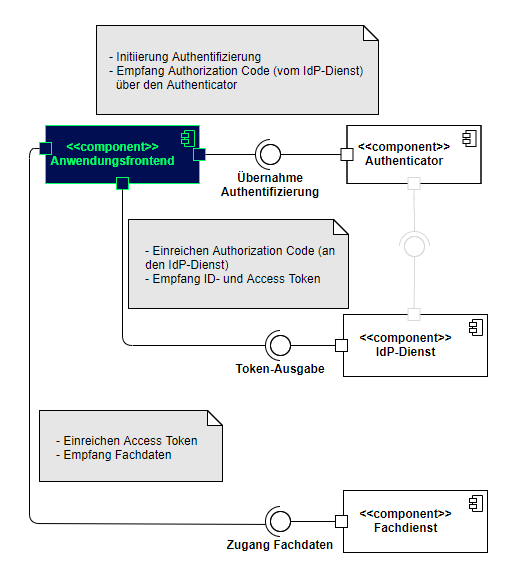
Abbildung 7: Schnittstellen des Anwendungsfrontends
Das Anwendungsfrontend übergibt seine Authentifizierungs-Anfrage an das Authenticator-Modul. Es reicht den vom Authenticator-Modul übergebenen AUTHORIZATION_CODE beim IDP-Dienst ein und erhält nach positiver Validierung einen ID_TOKEN und einen ACCESS_TOKEN. Das Anwendungsfrontend nutzt den ACCESS_TOKEN, um Fachdaten vom Fachdienst anzufragen.
A_20309
Das Anwendungsfrontend MUSS zur Laufzeit einen CODE_VERIFIER (Zufallswert) gemäß [RFC7636 # section-4.1] bilden. Der CODE_VERIFIER MUSS eine Entropie von mindestens 43 und maximal 128 Zeichen enthalten. Das Anwendungsfrontend MUSS über den CODE_VERIFIER einen HASH-Wert, die sogenannte CODE_CHALLENGE, gemäß [RFC7636 # section-4.2] bilden. <=
A_20483
Das Anwendungsfrontend MUSS über das Authenticator-Modul den Antrag zum AUTHORIZATION_CODE für einen ACCESS_TOKEN via Private-Use URI Scheme Redirection [RFC8252 # section-7.1] beim Authorization-Endpunkt in Form eines HTTP/1.1 GET-Request stellen und dabei die folgenden Attribute anführen:
Hinweis: Der Aufbau der Anfrage entspricht [gemSpec_IDP_Dienst#Kapitel 7.1 Authorization Request].
A_20085
Das Anwendungsfrontend MUSS leicht verständliche Fehlermeldungen ausgeben. Eine exakte Form der Fehlermeldung ist nicht vorgegeben [RFC6749 # section-1.7]. <=
Hinweis: Wenn möglich, sollen dem Nutzer Hilfestellungen gegeben werden, anhand derer man die Wiederholung des Fehlers vermeiden kann.
A_21323
Das Anwendungsfrontend MUSS vor dem Abrufen von ID_TOKEN und ACCESS_TOKEN einen zufälligen 256 Bit AES-Schlüssel ("Token-Key“) erzeugen. <=
A_21324
Das Anwendungsfrontend MUSS dem KEY_VERIFIER bilden, indem "Token-Key" und CODE_VERIFIER in einem JSON-Objekt kodiert werden.
<=
Hinweis: Der Aufbau des KEY_VERIFIER entspricht [gemSpec_IDP_Dienst#Kapitel 7.5 Token Request].
A_20529-01
Das Anwendungsfrontend MUSS den KEY_VERIFIER mittels JWE (JSON Web Encryption (JWE) [RFC7516 # section-3]) und PuK_IDP_ENC verschlüsseln und zusammen mit dem AUTHORIZATION_CODE TLS-gesichert als HTTP/1.1 POST Request an den Token-Endpunkt senden.
<=
Hinweis 1: Der Aufbau der Anfrage entspricht [gemSpec_IDP_Dienst#Kapitel 7.5 Token Request].
Hinweis 2: Als Verschlüsselungsalgorithmus für den KEY_VERIFIER ist ECDH-ES (Elliptic Curve Diffie-Hellman Ephemeral Static key agreement) vorgesehen.
A_19937
Das Anwendungsfrontend MUSS in der Lage sein, die vom Token-Endpunkt übertragenen Fehlermeldungen anzuzeigen. <=
A_20605
Das Anwendungsfrontend MUSS den Inhalt der Fehlermeldungen sowie mögliche Hinweise zur Fehlervermeidung vom Token-Endpunkt übernehmen. <=
Hinweis: Es ist insbesondere der Inhalt der Fehlermeldung gemeint. Die Formatierung darf den Gegebenheiten des Endgerätes entsprechend angepasst werden.
A_20079
Das Anwendungsfrontend MUSS im Falle eines Timeout selbständig eine Fehlermeldung generieren, wenn eine Fehlermeldung durch den Token-Endpunkt ausbleibt. <=
A_19938-01
Das Anwendungsfrontend MUSS das vom Token-Endpunkt ausgegebene ID_TOKEN als HTTP/1.1-Statusmeldung 200 verarbeiten und mittels "Token-Key" entschlüsseln.
Das Anwendungsfrontend MUSS das ID_TOKEN ablehnen, wenn dieses außerhalb der mit dem Token-Endpunkt etablierten TLS-Verbindung übertragen wird oder nicht mit dem vorher übermittelten "Token-Key" verschlüsselt war.
<=
Hinweis 1: Der Aufbau der Antwort und des ID_TOKEN entspricht [gemSpec_IDP_Dienst#Kapitel 7.6 Token Response]
Hinweis 2: Das Anwendungsfrontend nimmt sowohl den ID_TOKEN, als auch den ACCESS_TOKEN aus der Antwort des Token-Endpunktes des IDP-Dienstes. Der Token-Endpunkt antwortet mit dem Token auf die erfolgreiche Übergabe und Validierung des AUTHORIZATION_CODE durch das Anwendungsfrontend.
A_20625
Das Anwendungsfrontend MUSS die Signatur des ID_TOKEN mathematisch prüfen und auf ein zeitlich gültiges C.FD.SIG-Zertifikat mit der Rollen-OID oid_idpd zurückführen können, welches rückführbar ist auf ein CA-Zertifikat aus einer authentischen, integren und zeitlich gültigen TSL. <=
A_20283-01
Das Anwendungsfrontend MUSS das vom Token-Endpunkt ausgegebene ACCESS_TOKEN in der HTTP/1.1-Statusmeldung 200 verarbeiten und mittels "Token-Key" entschlüsseln.
Das Anwendungsfrontend MUSS das ACCESS_TOKEN ablehnen, wenn dieses außerhalb der mit dem Token-Endpunkt etablierten TLS-Verbindung übertragen wird oder nicht mit dem vorher übermittelten "Token-Key" verschlüsselt war.
<=
Hinweis: Der Aufbau der Antwort und des ACCESS_TOKEN entspricht [gemSpec_IDP_Dienst#Kapitel 7.6 Token Response].
A_20602
Das Anwendungsfrontend MUSS das ACCESS_TOKEN im Rahmen des entsprechenden fachlichen Aufrufs beim Fachdienst einreichen, um Zugang zu den angeforderten Daten zu erhalten. <=
A_21325
Das Anwendungsfrontend MUSS den entschlüsselten ACCESS_TOKEN, zusätzlich zur Übertragung mittels TLS, auf Anwendungsebene verschlüsselt zum Fachdienst übertragen. <=
A_21326
Das Anwendungsfrontend MUSS ACCESS_TOKEN beim Beenden sowie nach Ablauf ihrer Gültigkeit sicher löschen. <=
A_21327
Das Anwendungsfrontend MUSS ID_TOKEN beim Beenden sowie nach Ablauf ihrer Gültigkeit sicher löschen. <=
A_21328
Das Anwendungsfrontend MUSS empfangene ID_TOKEN und ACCESS_TOKEN gegen unberechtigten Zugriff schützen. <=
Zu einem sektoralen IDP gehört ein Authenticator-Modul. Sektoraler IDP und Authenticator-Modul zum sektoralen IDP sind in [gemSpec_IDP_Sek] spezifiziert. Die nachfolgenden Anforderungen beziehen sich auf das Anwendungsfrontend der Authenticator-Module zum sektoralen IDP.
A_23082
Anwendungsfrontends MÜSSEN, sofern nicht anderweitig ein sektoraler Identity Provider zuvor gemerkt oder festgelegt wurde, die IDP-Liste vom Authorization-Server herunterladen, auf Integrität prüfen und (bei erfolgreicher Prüfung) dem Benutzer zur Auswahl anzeigen. <=
A_23083
Anwendungsfrontends SOLL zur Auslösung der Benutzerauthentifizierung einen OAuth Authorization Request an den zugehörigen Authorization-Server schicken. <=
A_23084
Anwendungsfrontends MÜSSEN bei Erhalt einer URI-PAR nach https://www.rfc-editor.org/rfc/rfc9126.html#name-successful-response das Authenticator-Modul mittels der übergebenen Redirect-URL aufrufen und hierbei ggf. die Link-Technologie des jeweiligen Betriebssystems verwenden. <=
A_23085
Anwendungsfrontends MÜSSEN sich mittels Universal-Link bzw. App-Link unter der URL des Authorization-Servers im Betriebssystems registrieren. <=
A_23086
Anwendungsfrontends MÜSSEN den AUTHORIZATION_CODE vom Authenticator-Modul annehmen und an den Authorization-Server weiterleiten. <=
A_23081
Anwendungsfrontends und Web-Backend MÜSSEN bei Inaktivität des Nutzers von 10 Minuten automatisch zwischengespeicherte ACCESS_TOKEN und REFRESH_TOKEN löschen. <=
A_23097
Anwendungsfrontends MÜSSEN den Nutzern die Möglichkeit zum Abmelden bieten, und in diesem Fall zwischengespeicherte ACESS_TOKEN und REFRESH_TOKEN verwerfen. <=
AF_10119
Das Anwendungsfrontend SOLL folgenden Anwendungsfall umsetzen.
Tabelle 6 : Anwendungsfall "Abruf des ACCESS_TOKEN"
| Attribute | Bemerkung |
|---|---|
| Beschreibung | Ein Anwender möchte einen in der TI registrierte Fachdienst nutzen. Der Fachdienst muss sicherstellen, dass der Anwender zur Nutzung des Dienstes berechtigt ist. Hierzu authentisiert sich der Anwender gegenüber einem sektoralen Identity Provider, bei dem er registriert ist. Nach Abschluss der Authentisierung des Nutzers gegenüber dem sektoralen Identity Provider, erhält das Anwendungsfrontend oder Web-Backend vom Authorization-Server den AUTHORIZATION_CODE mit, dem er das ACCESS_TOKEN abrufen kann. |
| Akteur | Anwender der Fachanwendung |
| Auslöser | Ein Anwender möchte eine Gesundheitsanwendung der TI (Fachdienst) nutzen. Als Voraussetzung muss er sich bei einem sektoralen Identity Provider authentifizieren, bei welchem er registriert ist. Nach Abschluss der Authentifizierung erhält der Authorization-Server vom sektoralen Identity Provider einen ID_TOKEN (entsprechend ). |
| Komponenten |
|
| Vorbedingung | Der Authorization-Server hat entsprechend dem den ID_TOKEN erhalten. |
| Ablauf |
|
| Ergebnis | Das Anwendungsfrontend oder Web-Backend hat den ACCESS_TOKEN zum Zugriff auf die Fachdienst API. |
| Akzeptanzkriterien | , , |
| Alternativen |
|
ML-133246
Der Nutzer wurde erfolgreich authentifiziert. <=
ML-133244
Es wurde ein ACCESS_TOKEN und ggf. REFRESH_TOKEN für den Nutzer und den Authentisierungskontext ausgestellt. <=
ML-133245
Die OAuth 2.0 Security Best Current Practice https://datatracker.ietf.org/doc/html/draft-ietf-oauth-security-topics wurden eingehalten. <=
Das folgende Kapitel hat einen rein informativen Charakter und soll Hilfestellung beim Verständnis der Interaktion mit Smartcards der TI geben. Es ergeben sich aus den Beschreibungen keine normativen Anforderungen, welche umzusetzen wären. Normative Vorgaben aus referenzierten Dokumenten bleiben führend. Als Ziel soll hiermit ein grundsätzliches Verständnis der Abläufe vermittelt werden, welches eine Realisierung der Kommunikation des Authenticator-Moduls mit den Smartcards erleichtert.
Zur Nutzung bestimmter Dienste der Telematikinfrastruktur ist eine Authentisierung der zugreifenden Person erforderlich. Dieses Dokument betrachtet ein Konzept für folgende User Story aus Kartensicht:
Ein Kartennutzer möchte eine eGK oder einen HBA über die kontaktlose Schnittstelle nutzen, um sich mittels Challenge- Response-Verfahren zu authentisieren. Soll die Challenge durch die SMC-B signiert werden, wird hierbei die Funktion "externalAuthenticate" des PTV-Konnektors verwendet, wenn sich die SMC-B im freigeschalteten Zustand befindet.
Das Authenticator-Modul verwendet folgenden Ablauf, wobei hier nur Interaktionen mit der Karte dargestellt werden:
Aus Sicht einer eGK oder eines HBA stellt sich die User Story wie folgt dar (siehe Abbildung "Überblick zum Ablauf"):
Erläuterungen zu Abbildung "Überblick zum Ablauf": Betrachtet wird hier ein System, welches aus folgenden Komponenten besteht:
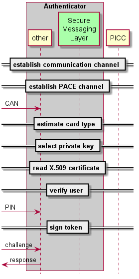
Abbildung 8: Überblick zum Ablauf
Die folgenden Unterkapitel schildern den Ablauf zum Signieren einer Challenge im Detail. Ziel der Darstellung in diesem Kapitel ist es, dass ein Entwickler in die Lage versetzt wird, auf Basis dieser Beschreibung (plus den Informationen aus verlinkten Dokumenten) die auf der kontaktlosen Nutzung von Smartcards der TI basierten Funktionen eines Authenticator-Moduls zu entwickeln.
Wie ein Kommunikationskanal zwischen Authenticator-Modul und der PICC etabliert wird, hängt von der Hard- und Software des Gerätes ab, auf welchem das Authenticator-Modul läuft und mit welchem die PICC verbunden wird.
Nach Aufbau eines Kommunikationskanals ist das Authenticator-Modul in der Lage, Kommandonachrichten an die PICC zu senden und korrespondierende Antwortnachrichten von dort zu empfangen. Da es sich bei NFC um eine Funkschnittstelle handelt, ist mit der Möglichkeit zu rechnen, dass Angreifer die Kommunikation belauschen oder beeinflussen. Aus Sicherheitsgründen sind Karten der TI so konfiguriert, dass sie (von wenigen Ausnahmen abgesehen) Funktionen über die kontaktlose Schnittstelle nur im Rahmen einer kryptographisch gesicherten Verbindung bereitstellen. Dem Stand der Technik entsprechend wird dabei PACE eingesetzt.
PACE (Password Authenticated Connection Establishment) bietet die Möglichkeit, selbst mit schwachen Passwörtern einen kryptographisch starken Kommunikationskanal zu etablieren. Das PACE-Protokoll wird kurz in [gemSpec_COS#15.4.2] beschrieben. Die dortige Beschreibung geht auf [TR-03110] zurück.
Der Aufbau eines PACE-Kanals gliedert sich grob in zwei Phasen:
Anschließend sind beide Kommunikationspartner im Besitz starker kryptographischer Schlüssel, mit deren Hilfe sie die weitere Kommunikation absichern.
In [TR-03110] sind mehrere Varianten beschrieben, mittels eines (schwachen) Passwortes starke kryptographische Schlüssel zu vereinbaren. Drei dieser Varianten sind in [gemSpec_COS] verpflichtend enthalten. Welche Variante eine Karte der TI konkret unterstützt, ist in der Datei EF.CardAccess konform zu [TR-03110] codiert.
Eine allgemeine Funktion zum Aufbau eines PACE-Kanals würde die Daten aus EF.CardAccess auswerten. Derzeit wird in [gemSpec_eGK_ObjSys], [gemSpec_HBA_ObjSys] und [gemSpec_HBA_ObjSys_G2.1] nur genau eine PACE-Variante verwendet. Zudem ist zu erwarten, dass die derzeit verwendete Variante mindestens bis zum Jahre 2026 verwendet wird. Deshalb wird hier folgende Empfehlung für die Implementierung des Authenticator-Moduls ausgesprochen:
Das Authenticator-Modul verwendet die PACE-Variante "id-PACE-ECDH-GM-AES-CBC-CMAC-128" und den Schlüssel SK.CAN mit der Schlüsselreferenz keyRef='02'.
Die verwendete PACE-Variante legt unter anderem die Domainparameter der zu verwendenden elliptischen Kurve fest.
Vor dem Durchlauf des PACE-Protokolls ist auf der PICC der zugehörige Schlüssel SK.CAN auszuwählen. Dies geschieht mittels des Manage Security Environment Kommandos gemäß [gemSpec_COS#(N102.448)] mit den Parametern OID und keyRef gemäß der in ausgewählten PACE-Variante. Gemäß der dort gegebenen Empfehlung gilt also:
Falls die PICC auf dieses Kommando NICHT mit dem Trailer '9000' = NoError antwortet, ist die PICC zu keiner der im Literaturverzeichnis aufgelisteten Objektsystemspezifikationen konform. In diesem Fall wird empfohlen, den Use Case abzubrechen.
Der Ablauf des PACE-Authentisierungsprotokolls ist in [gemSpec_COS#CosA_8da] beschrieben. In der dortigen Abbildung sind drei Komponenten zu sehen, die wie folgt mit den Komponenten aus der unteren Abbildung "Sequenzdiagramm PACE-Authentisierung" korrespondieren:
Tabelle 7: Zusammenhang CosA_8da mit der folgenden Abbildung
| [COS#CosA_8da] |
Abbildung 9 | Anmerkung |
|---|---|---|
| COSb PCD |
Secure Messaging Layer |
Teilkomponente des NFC-Authenticator-Moduls, welche einen PACE-Kanal etabliert und anschließend für die geschützte Nachrichtenübertragung zur PICC sorgt. |
| Steuersoftware |
Secure Messaging Layer |
|
| COSa PICC |
PICC |
Karte der TI, eGK oder HBA |
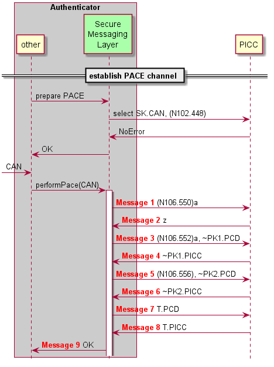
Abbildung 9: Sequenzdiagramm PACE-Authentisierung
Die PICC ist mit einer CAN (Card Access Number) ausgestattet. Die CAN ist auf dem Kartenkörper aufgedruckt. (Für die eGK siehe gemSpec_eGK_Opt - z.B. Abb_eGKOPT_5. Für den HBA gibt es keine Vorgaben der gematik zum Layout, mit Card-G2-A_2038 nur eine Pflicht der Bedruckung). Die Komponente "Secure Messaging Layer" benötigt die CAN, um das PACE-Protokoll erfolgreich zu durchlaufen. Typischerweise wird die CAN einmalig vom Karteninhaber eingegeben. Es ist aber auch eine automatische Erkennung der CAN (etwa per Kamera) denkbar. Hier wird davon ausgegangen, dass der "Secure Messaging Layer" eine Komponente ist, die durch Übergabe der CAN zum Durchlaufen des PACE-Protokolls angestoßen wird.
Im Gutfall wird das PACE-Protokoll erfolgreich durchlaufen und im "Secure Messaging Layer" wurden dabei dieselben kryptographischen Schlüssel etabliert wie in der PICC.
Im Schlechtfall scheitert einer der im Folgenden beschriebenen Schritte. Dann ist davon auszugehen, dass die aktuelle PICC nicht in der Lage ist, ein Token zu signieren. Gründe für das Scheitern umfassen unter anderem:
Im Folgenden werden die Nachrichten genauer beschrieben, die zwischen "Secure Messaging Layer" und PICC ausgetauscht werden.
Der "Secure Messaging Layer" erzeugt ein ephemeres Schlüsselpaar (~SK1.PCD, ~PK1.PCD), Details dazu in [gemSpec_COS#(N085.066)a.4].
Message 1: Der "Secure Messaging Layer" sendet ein General Authenticate Kommando gemäß [gemSpec_COS#(N106.550)a] zur PICC.
Message 2: Die Antwortdaten der PICC enthalten das Kryptogramm z.
Der "Secure Messaging Layer" errechnet mittels CAN und z die Zahl s gemäß [gemSpec_COS#(N085.066)b].
Message 3: Der "Secure Messaging Layer" sendet ein General Authenticate Kommando gemäß [gemSpec_COS#(N106.552)a] zur PICC, welches ~PK1.PCD enthält.
Message 4: Die Antwortdaten der PICC enthalten das Kryptogramm ~PK1.PICC.
Der "Secure Messaging Layer" errechnet mittels der Zahl s, dem Schlüssel ~SK1.PCD und ~PK1.PICC gemäß [gemSpec_COS#(N085.066)c] ephemere Domainparameter ~D und ein weiteres ephemeres Schlüsselpaar (~SK2.PCD, ~PK2.PCD).
Message 5: Der "Secure Messaging Layer" sendet ein General Authenticate Kommando gemäß [gemSpec_COS#(N106.556)] zur PICC, welches ~PK2.PCD enthält.
Message 6: Die Antwortdaten der PICC enthalten den Schlüssel ~PK2.PICC.
Der "Secure Messaging Layer" errechnet mittels ~D, SK2.PCD und ~PK2.PICC gemäß [gemSpec_COS#(N085.066)d] Sessionkeys k.MAC und k.ENC, sowie den MAC T.PCD.
Message 7: Der "Secure Messaging Layer" sendet ein General Authenticate Kommando gemäß [gemSpec_COS#(N106.560)] zur PICC, welches T.PCD enthält.
Message 8: Die Antwortdaten der PICC enthalten den MAC T.PICC
Der "Secure Messaging Layer" überprüft T.PICC gemäß [gemSpec_COS#(N085.066)e].
Falls kein Fehler auftrat, wird die Routine zum Etablieren des PACE-Kanals erfolgreich beendet. Damit liegen in der Komponente "Secure Messaging Layer" Sessionkeys vor. Die weitere Beschreibung geht davon aus, dass alle Kommandonachrichten des Authenticator-Moduls über die Komponente "Secure Messaging Layer" gesendet werden. Die Komponente "Secure Messaging Layer" schützt dabei Kommandonachrichten mit "Secure Messaging" gemäß [gemSpec_COS#13.2]. Die von der PICC empfangenen Antwortnachrichten sind kryptographisch gemäß [gemSpec_COS#13.3] geschützt und der "Secure Messaging Layer" prüft und entschlüsselt die Antwortnachrichten der PICC so, dass sie im Klartext und in der in [gemSpec_COS#14] beschriebenen Form zur Verfügung gestellt werden.
Es wird empfohlen, dass nach Aufbau des PACE-Kanals das Masterfile (MF) gemäß [gemSpec_COS#(N040.800)] selektiert wird. Wenn die PICC dieses Kommando erfolgreich durchgeführt hat, dann ist die PICC zuverlässig in einem Zustand, mit dem im Folgenden weitergearbeitet werden kann.
In der vorliegenden Dokumentversion dieser Spezifikation gilt die hier beschriebene Ermittlung des Kartentyps, der in [gemSpec_eGK_ObjSys_G2.1], [gemSpec_HBA_ObjSys] und [gemSpec_HBA_ObjSys_G2.1] definiert ist. Andere Kartentypen der TI (derzeit sind das SMC-B, gSMC-K und gSMC-KT) unterstützen das kontaktlose Interface nicht und werden hier nicht betrachtet.
Unter anderem gibt es folgende Möglichkeiten, den Kartentyp für die hier relevanten Karten zu ermitteln:
Empfehlung: Erst nach Aufbau des PACE-Kanals ist eine kryptographisch gesicherte und damit zuverlässige Kommunikation möglich. Deshalb wird empfohlen, den Kartentyp durch Auslesen des ersten Rekords von EF.DIR zu ermitteln.
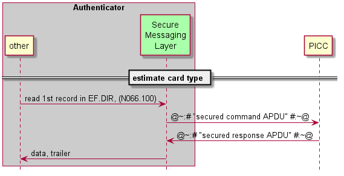
Abbildung 10: Ablauf zur Ermittlung des Kartentyps
Die Kommando-Application Protocol Data Unit (APDU) gemäß [gemSpec_COS#(N066.100) lautet in diesem Fall konkret: '00 B2 01F4 00'.
Die Antwort-APDU enthält (im Erfolgsfall) Daten und einen Trailer: Fallunterscheidung: Falls
Nach Interpretation der Antwort-APDU entscheidet das Authenticator-Modul, ob eine eGK, ein HBA oder ein unbekannter (nicht unterstützter) Kartentyp vorliegt.
Für den Kartentyp eGK sind private Schlüssel sowohl auf RSA-Basis als auch auf Basis elliptischer Kurven verfügbar. Dasselbe gilt für den Kartentyp HBA basierend auf [gemSpec_HBA_ObjSys_G2.1]. Lediglich für den Kartentyp HBA basierend auf [gemSpec_HBA_ObjSys] steht nur RSA-Kryptographie zur Verfügung.
Gemäß [TR–03116-1#3.2] ist die Moduluslänge von 2048 Bit für RSA-Schlüssel nur bis Ende 2023 zulässig. Deshalb wird empfohlen, – sofern vorhanden – Schlüssel basierend auf elliptischen Kurven einzusetzen.
Nach dem bis hierher beschriebenen Ablauf aus und liegt zwar der Kartentyp fest, nicht aber die Information, ob es sich um einen HBA gemäß [gemSpec_HBA_ObjSys] oder [gemSpec_HBA_ObjSys_G2.1] handelt. Unter anderem gibt es folgende Möglichkeiten herauszufinden, ob ein vorliegender HBA Schlüssel basierend auf elliptischen Kurven unterstützt:
Zur Vereinfachung der Implementierung wird folgende Vorgehensweise empfohlen: Falls im Ablauf gemäß als Kartentyp ermittelt wurde
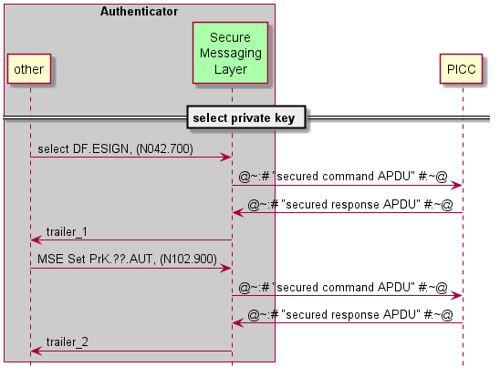
Abbildung 11: Ablauf zur Selektion des privaten Schlüssels
Vor der Selektion des privaten Schlüsselobjektes ist zunächst die passende Anwendung auf der PICC zu selektieren, in diesem Fall das DF.ESIGN. Die Kommando-APDU gemäß [gemSpec_COS#(N042.700)] lautet in diesem Fall (sowohl für eGK als auch für HBA): '00 A4 040C 0A A000000167455349474E'. Die zugehörige Antwort-APDU enthält lediglich "trailer_1". Falls "trailer_1" ungleich '9000' = NoError ist, dann handelt es sich weder um eine eGK noch um einen HBA.
Nach Selektion der Anwendung DF.ESIGN wird gemäß der Empfehlung der private Schlüssel gemäß [gemSpec_COS#(N102.900)] selektiert. Die Kommando APDU lautet dann:
| Kartentyp gemäß |
keyRef |
algId |
Kommando APDU |
|---|---|---|---|
| [gemSpec_eGK_ObjSys_G2.1] |
'82' |
'00' |
'00 22 41B6 06 840182800100' |
| [gemSpec_HBA_ObjSys_G2.1] |
'86' |
'00' |
'00 22 41B6 06 840186800100' |
| [gemSpec_HBA_ObjSys] |
'82' |
'05' |
'00 22 41B6 06 840182800105' |
Die zugehörige Antwort APDU enthält lediglich "trailer_2". Falls "trailer_2" gleich '9000' = NoError ist, dann wurde der private Schlüssel erfolgreich selektiert. Falls "trailer_2" ungleich '9000' ist, dann enthält die Anwendung DF.ESIGN keinen privaten Signaturschlüssel mit der angegebenen keyRef und algId.
Das zum privaten Schlüsselobjekt zugehörige X.509-Zertifikat enthält Informationen, die für die Validierung einer Signatur erforderlich sind. Deshalb ist die Kenntnis des X.509-Zertifikates signifikant. Die Informationsmenge im X.509-Zertifikat ist so groß (bis zu 1.900 Byte), dass sie nicht bei allen zulässigen Implementierungen mit einem einzigen Kommando aus der PICC auslesbar ist. Hinzu kommt, dass es für mobile Geräte eine Obergrenze in der Datenmenge gibt, die im Rahmen eines Kommando-Antwortpaares austauschbar ist. Für das Auslesen des X.509-Zertifikates sind also zwei Puffergrößen relevant:
Empfehlung: Es wird empfohlen, beim Auslesen des X.509-Zertifikates eine Blockgröße von 223 zu wählen. Damit ist die Größe einer gesicherten Antwortnachricht kleiner als 256 Byte. Der Wert von 256 Byte erscheint ein sicherer Wert für die Puffergröße mobiler Endgeräte. Dieser Wert ist erheblich kleiner als die 1033 Byte, die gemäß [gemSpec_COS#(N029.890)a.4] mindestens zu unterstützen sind.
Alles in allem wird das X.509-Zertifikat also in mehreren Blöcken zu je (empfohlenen) 223 Byte gelesen. Dabei ist zu unterscheiden zwischen dem ersten Lesekommando und allen weiteren Lesekommandos. Es wird empfohlen, im ersten Lesekommando gemäß [gemSepc_COS#(N051.500)], also Read Binary-Kommando und mit shortFileIdentifier vorzugehen. Alle weiteren Lesekommandos verwenden [gemSpec_COS#(N051.100)], also Read Binary-Kommando ohne shortFileIdentifier.
Im ersten Lesekommando wird offset = 0 gewählt. Bei allen weiteren Lesekommandos (im Sinne einer do-while-Schleife) wird der offset auf die Anzahl der bislang ausgelesenen Byte gesetzt. Die do-while-Schleife bricht ab, wenn die Antwortnachricht auf ein Lesekommando keine Antwortdaten mehr erhält, sondern nur noch den obligatorischen Trailer. Welchen Wert dieser Trailer hat, ist für den weiteren Verlauf irrelevant, sofern die bis dahin ausgelesenen Daten (konkateniert) ein valides X.509-Zertifikat ergeben. Die Validierung des X.509-Zertifikates ist nicht Gegenstand dieses Dokumentes.
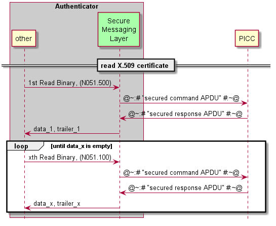
Abbildung 12: Ablauf zum Auslesen des X.509-Zertifikates
Das erste Lesekommando wählt gleichzeitig die zu lesende Datei aus. Deshalb enthält das erste Lesekommando einen shortFileIdentifier. Der shortFileIdentifier ist in Abhängigkeit vom Kartentypen gemäß und des ausgewählten privaten Schlüssels gemäß zu wählen.
Tabelle 8: Auswahl des shortFileIdentifier
| Kartentyp gemäß |
privater Schlüssel |
SFI |
Kommando APDU |
|---|---|---|---|
| [gemSpec_eGK_ObjSys_G2.1] |
PrK.CH.AUT.E256 |
4
|
'00 B0 8400 DF' |
| [gemSpec_HBA_ObjSys_G2.1] |
PrK.HP.AUT.E256 |
6
|
'00 B0 8600 DF' |
| [gemSpec_HBA_ObjSys] |
PrK.HP.AUT.R2048 |
1
|
'00 B0 8100 DF' |
Für die weiteren Lesekommandos ist ein offset zu wählen, der gleich der Anzahl N der bislang ausgelesenen Bytes entspricht. N in hexadezimaler Darstellung besteht aus einem most-significant-byte MSByte_N und einem least-significant-byte LSByte_N. Die folgende Tabelle zeigt die (ungesicherte) Kommando APDU für alle weiteren Lesekommandos (diese sind unabhängig vom Kartentyp und unabhängig vom ausgewählten privaten Schlüsselobjekt):
Tabelle 9: Kommando APDU für Lesekommandos
| zweites Lesekommando |
'00 B0 00DF DF' |
| drittes Lesekommando |
'00 B0 01BE DF' |
| viertes Lesekommando |
'00 B0 029D DF' |
| fünftes Lesekommando |
'00 B0 03C7 DF' |
| sechstes Lesekommando |
'00 B0 04B5 DF' |
| siebtes Lesekommando |
'00 B0 053A DF' |
| achtes Lesekommando |
'00 B0 0619 DF' |
| neuntes Lesekommando |
'00 B0 06F8 DF' |
Aus dem obigen Text und Abbildung 12 geht die Empfehlung hervor, die Schleife dann abzubrechen, wenn die Antwortnachricht keine Daten (oder, was dasselbe ist, leere Daten) enthält. Diese Vorgehensweise hat den Vorteil, dass der Wert des Trailers irrelevant ist. Typischerweise wird bei dieser Vorgehensweise ein Kommando zu viel geschickt. Falls die Anzahl an Bytes im X.509-Zertifikat kein Vielfaches der Blockgröße (hier 223) ist, dann gibt die PICC im Trailer anfangs '9000' = NoError zurück, dann bei vorhandenen Daten (also Anzahl Bytes in data_x größer null) '6282' = EndOfFileWarning, und wenn dann doch noch weiter gelesen wird '6B00' = OffsetTooBig zurück. Für den (eher untypischen) Fall, dass die Anzahl Bytes im X.509-Zertifikat ein Vielfaches der gewählten Blockgröße ist, wird nie '6282' = EndOfFileWarning gemeldet. Eine Implementierung, welche mit der minimalen Anzahl an Lesebefehlen auskommen will, hat dies zu berücksichtigen.
Weil das auszulesende X.509-Zertifikat als ASN.1-Codierung vorliegt, ist es möglich, die genaue Anzahl der Bytes durch Analyse der ersten ausgelesenen Bytes zu ermitteln. Es erscheint nicht sinnvoll, diesen Aufwand zu treiben.
Die Verwendung des privaten Schlüsselobjektes ist erst nach einer Benutzerverifikation möglich. Es wird empfohlen, die Benutzerverifikation erst nach Validierung des X.509-Zertifikates durchzuführen, weil eine Benutzerverifikation bei nicht validem X.509-Zertifikat überflüssig erscheint. Für die im Rahmen dieses Dokumentes betrachteten privaten Schlüsselobjekte ist die Benutzerverifikation nach einem Aktivieren der PICC nur genau einmal notwendig. Anschließend lassen sich die hier behandelten privaten Schlüsselobjekte beliebig oft verwenden.
Für die Benutzerverifikation ist dem Authenticator-Modul das Geheimnis (also die PIN) bekanntzugeben. Typischerweise wird die PIN vom Benutzer eingegeben. Für die Benutzerverifikation ist die Zahlenfolge der PIN in einen Format-2-PIN-Block gemäß [gemSpec_COS#(N008.100)] umzuwandeln. Die folgende Tabelle enthält einige Beispiele für eine derartige Umwandlung.
Tabelle 10: Beispielhafte Umwandlungen einer PIN
| PIN |
Format-2-PIN-Block |
|---|---|
| 123456 |
26123456FFFFFFFF |
| 7531246 |
277531246FFFFFFF |
| 87654321 |
2887654321FFFFFF |
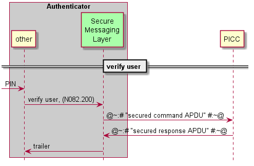
Abbildung 13: Ablauf zur Verifikation des Benutzers
Für die Benutzerverifikation ist nur eine Kommandonachricht erforderlich. Welches Passwortobjekt dabei verwendet wird, hängt vom Kartentyp ab.
Tabelle 11: Passwortobjekt in Abhängigkeit des Kartentyps
| Kartentyp gemäß |
Password |
pwdId |
Kommando APDU |
|---|---|---|---|
| [gemSpec_eGK_ObjSys_G2.1 |
MRPIN.home |
2 |
'00 20 0002 08 Format-2-PIN-Block' |
| [gemSpec_HBA_ObjSys_G2.1] |
PIN.CH |
1 |
'00 20 0001 08 Format-2-PIN-Block' |
| [gemSpec_HBA_ObjSys] |
Falls die Antwort-APDU den Trailer '9000' = NoError enthält, lassen sich mit dem privaten Schlüsselobjekt Signaturen erstellen.
Typischerweise sind per digitaler Signatur geschützten Artefakte mitunter sehr groß (etwa einige Megabyte oder auch Gigabyte). Wegen der begrenzten Bandbreite ist es nicht sinnvoll, die kompletten Artefakte zu einer Karte zu übertragen. Technisch bedeutet dies, dass der Signaturvorgang arbeitsteilig abläuft. Sicherheitstechnisch unbedenkliche Operationen laufen außerhalb der Karte ab und nur die sicherheitskritischen Operationen werden in der Karte ausgeführt. Dazu wird an der Schnittstelle zur Karte ein Zwischenergebnis der Signaturberechnung übergeben.
Der Algorithmus signPSS = RSASSA-PSS ist in [PKCS #1] Kapitel 8.1.1 beschrieben. Dabei wird die zu signierende Nachricht M zunächst gemäß EMSA-PSS-Encode codiert. Das Codierverfahren EMSA-PSS-Encode ist in [PKCS #1] Kapitel 9.1.1 beschrieben. Außerhalb der Karte werden dabei die Schritte gemäß [PKCS #1] Kapitel 9.1.1 Steps 1 und 2 mit dem Hash-Algorithmus SHA-256 durchgeführt. Als Ergebnis liegt der Hashwert mHash vor, der in weiterverarbeitet wird.
Der Algorithmus signECDSA ist in [TR–03111#4.2.1.1] beschrieben. Dort wird in Actions 5 der Hashwert Ht(M) verwendet. Im vorliegenden Fall ist dieser Wert wie folgt zu berechnen: Ht(M) = mHash = SHA-256 Hashwert der Nachricht M. Als Ergebnis liegt der Hashwert mHash vor, der in weiterverarbeitet wird.
Eine Nachricht challenge wird signiert. Hier wird davon ausgegangen, dass dem Authenticator-Modul die zu signierende Nachricht challenge übergeben wird. Zunächst berechnet das Authenticator-Modul gemäß oder den SHA-256 Hashwert zu challenge gemäß mHash = SHA-256(challenge).
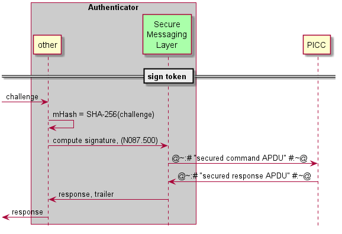
Abbildung 14: Ablauf eines Signaturvorgangs
Für den Signaturvorgang ist nur eine Kommando-APDU erforderlich: '00 2A 9E9A 20 mHash00'.
Falls die Antwort-APDU Daten enthält (response also nicht leer ist), dann war der Signaturvorgang erfolgreich.
| Kürzel |
Erläuterung |
|---|---|
| APDU | Application Protocol Data Unit (Nachricht, die auf der Applikationsebene zwischen einer Smartcard und der externen Welt ausgetauscht wird) |
| AVS | Apothekenverwaltungssystem |
| CAN | Card Access Number (Kartenzugriffsnummer, auf dem Kartenkörper aufgedruckte Ziffernfolge) |
| eGK | Elektronische Gesundheitskarte |
| FCP | File Control Parameter (Liste mit Eigenschaften einer Datei, die auf einer Smartcard gespeichert ist) |
| GdV | Gerät des Versicherten |
| HBA | Heilberufsausweis |
| IDP | Identity Provider |
| JSON | JavaScript Object Notation |
| JWE | JSON Web Encryption |
| JWS | JSON Web Signature |
| JWT | JSON Web Token |
| KIS | Krankenhausinformationssystem |
| NFC | Near Field Communication (Kommunikation im Nahfeld einer Antenne) |
| OAuth 2.0 | Open Authorization 2.0 |
| OIDC | OpenID Connect |
| PACE | Password Authenticated Connection Establishment (Passwort authentisierter Verbindungsaufbau) |
| PIN | Personal Identification Number |
| PICC | Proximity Integrated Circuit Card (kontaktlose Smartcard) |
| PKI | Public Key Infrastructure |
| PVS | Praxisverwaltungssystem, ärztliche oder zahnärztliches |
| QES | Qualifizierte Elektronische Signatur |
| SMC-B | Security Module Card Typ B, Institutionenkarte |
| TI | Telematikinfrastruktur |
| TLS | Transport Layer Security |
| URI | Uniform Resource Identifier |
| URL | Uniform Resource Locator |
| Begriff |
Erläuterung |
|---|---|
| Access Token | Ein Access Token (nach [RFC6749 # section-1.4]) wird vom Client (Anwendungsfrontend) benötigt, um auf geschützte Daten eines Resource Servers zuzugreifen. Die Repräsentation kann als JSON Web Token erfolgen. |
| Account | Eine lokales Konto eines Nutzers auf einem Gerät. |
| Alternatives Authentisierungsmittel | Mit einem bereits etablierten Authentisierungsmittel verknüpftes Mittel zur Authentisierung gegenüber Fachdiensten. |
| Authentifizierung des Nutzers am Gerät oder lokale Authentifizierung | Authentifizierungsmittel des Nutzers zur Nutzung eines Kontos auf einem Mobilgerät. |
| Authentifizierungszertifikat | Unter einem Authentifizierungszertifikat werden im Kontext der Registrierung und Verwendung von alternativen Authentisierungsmittel Zertifikate vom Typ C.CH.AUT der eGK verstanden. |
| Authorization-Endpunkt |
Der Authorization Endpunkt ist diejenige Schnittstelle, an welcher der Authenticator die zu validierenden Nutzerinformationen SCOPE, CONSENT-Freigabe und Nutzerzertifikat zwecks Prüfung entgegen nimmt und einen AUTHORIZATION_CODE heraus gibt. |
| Authorization Server | OAuth2-Rolle (siehe [RFC6749 # section-1.1]): Der Authorization Server ist Teil des IDP-Dienstes. Der Server authentifiziert den Resource Owner (Nutzer) und stellt Access Tokens für den vom Resource Owner erlaubten Anwendungsbereich (Scope) für einen Resource Server bzw. eine auf einem Resource Server existierende Protected Resource aus. |
| Autorisierte Anwendung eines Schlüssels | Anwendung eines kryptographischen Schlüssels auf Daten durch einen berechtigten Nutzer. |
| Betriebssystem (oder Plattform) | Der Name des Betriebssystems eines Geräts. |
| Besitz (eines Geräts) | Verwendungshoheit eines Nutzers über ein Mobilgerät. |
| Bewertung (eines Gerätetyps) | Sicherheitsbezogene Einstufung eines Gerätetyps mit Bezug auf seine Eignung als Authentisierungsmittel |
| Block/Allow-Liste(n) | Registrierung von Gerätetypen und Zuordnung zu einer Bewertung. |
| Consent | Consent ist der Raum von Attributen, welche vom IDP-Dienst bezogen auf die im Claim des jeweiligen Fachdienstes eingeforderten Attribute zusammenfasst. Es besteht Einigkeit zwischen dem was gefordert wird und welche Attribute im Token bestätigt werden. |
| Claim | Ein Key/Value-Paar im Payload eines JSON Web Token. |
| Client | OAuth2-Rolle (siehe [RFC6749 # section-1.1]): Eine Anwendung (Relying Party), die auf geschützte Ressourcen des Resource Owners zugreifen möchte, die vom Resource Server bereitgestellt werden. Der Client kann auf einem Server (Webanwendung), Desktop-PC, mobilen Gerät etc. ausgeführt werden. |
| Discovery Document | Ein OpenID Connect-Metadatendokument (siehe [openid-connect-discovery 1.0]), das den Großteil der Informationen enthält, die für eine App zum Durchführen einer Anmeldung erforderlich sind. Hierzu gehören Informationen wie z.B. die zu verwendenden URLs und der Speicherort der öffentlichen Signaturschlüssel des Dienstes. |
| Funktionsmerkmal | Der Begriff beschreibt eine Funktion oder auch einzelne, eine logische Einheit bildende Teilfunktionen der TI im Rahmen der funktionalen Zerlegung des Systems. |
| Gerät | Alle Arten von mobilen Endgeräten. |
| Geräteinformationen | Die Kombination der Informationen zum Typ eines Geräts und dem Namen eines Geräts. |
| Hersteller | Der Name des Herstellers eines Geräts. |
| Inspektion | Einsicht des Nutzers in die für die Anwendung von alternativen Authentisierungsmitteln gespeicherten Daten auf seinem Gerät oder innerhalb des IDP-Dienstes. |
| ID-Token | Ein auf JSON basiertes und nach [RFC7519] (JWT) genormtes Identitäts-Token, mit dem ein Client (Anwendungsfrontend) die Identität eines Nutzers überprüfen kann. |
| Key-Identifier | Einem kryptographischen Schlüssel oder einem Schlüsselpaar zugeordnete Zeichenkette zur Identifikation des Schlüssels. |
| Löschung oder Invalidierung | Unter Löschung eines Schlüssels sollen pauschal alle Operationen verstanden werden, die einen kryptographischen Schlüssel dauerhaft einer Anwendung entziehen. |
| Modell | Der vom Hersteller vergebene Name des Geräts. |
| Name (eines Geräts) | Ein vom Nutzer vergebener Name eines Geräts. |
| Open Authorization 2.0 | Ein Protokoll zur Autorisierung für Web-, Desktop und mobile Anwendungen. Dabei wird es einem Endbenutzer (Resource Owner) ermöglicht, einer Anwendung (Client) den Zugriff auf Daten oder Dienste (Resources) zu ermöglichen, die von einem Dritten (Resource Server) bereitgestellt werden. |
| OpenID Connect | OpenID Connect (OIDC) ist eine Authentifizierungsschicht, die auf dem Autorisierungsframework OAuth 2.0 basiert. Es ermöglicht Clients, die Identität des Nutzers anhand der Authentifizierung durch einen Autorisierungsserver zu überprüfen (siehe [openid-connect-core 1.0]). |
| Pairing | Prüfbare Verbindung von kryptographischem Schlüsselmaterial zu einer innerhalb der Telematikinfrastruktur registrierten kryptographischen Identität. |
| Produkt-Name | Der vom Hersteller für den Endkunden vergebene Name eines Geräts. |
| JSON Web Token | Ein auf JSON basiertes und nach [RFC7519] (JWT) genormtes Access Token. Das JWT ermöglicht den Austausch von verifizierbaren Claims innerhalb seines Payloads. |
| Resource Owner | OAuth2-Rolle (siehe [RFC6749 # section-1.1]): Eine Entität (Nutzer), die einem Dritten den Zugriff auf ihre geschützten Ressourcen gewähren kann. Diese Ressourcen werden durch den Resource Server bereitgestellt. Ist der Resource Owner eine Person, wird diese als Nutzer bezeichnet. |
| Resource Server | OAuth2-Rolle (siehe [RFC6749 # section-1.1]): Der Server (Dienst), auf dem die geschützten Ressourcen (Protected Resources) liegen. Er ist in der Lage, auf Basis von Access Tokens darauf Zugriff zu gewähren. Ein solcher Token repräsentiert die delegierte Autorisierung des Resource Owners. |
| SSO-Token | Gegen Vorlage eines gültigen SSO Token ist keine erneute Nutzerauthentifizierung für die Ausstellung eines Access Tokens am IDP-Dienst nötig. Das SSO-Token übernimmt damit hier die Funktion eines Refresh-Token im Rahmen des eRezeptes. |
| Token-Endpunkt | Der Token-Endpunkt ist die Schnittstelle des IDP-Dienstes an welcher Anwendungsfrontends und Fachdienste gegen Vorlage des AUTHORIZATION_CODE ein ACCESS_TOKEN und ggf. weitere Token erhält. |
| Typ (eines Geräts) | Eine existente Kombination von Gerät und Betriebssystem beschrieben durch Namen des Herstellers, Namen des Produkts, Betriebssystem und Version des Betriebssystems. |
| Version (eines Betriebssystems) | Die Bezeichnung der Version des Betriebssystems eines Geräts. |
Das Glossar wird als eigenständiges Dokument (vgl. [gemGlossar]) zur Verfügung gestellt.
Die nachfolgende Tabelle enthält die Bezeichnung der in dem vorliegenden Dokument referenzierten Dokumente der gematik zur Telematikinfrastruktur. Der mit der vorliegenden Version korrelierende Entwicklungsstand dieser Konzepte und Spezifikationen wird pro Release in einer Dokumentenlandkarte definiert; Version und Stand der referenzierten Dokumente sind daher in der nachfolgenden Tabelle nicht aufgeführt. Deren zu diesem Dokument jeweils gültige Versionsnummern sind in der aktuellen, von der gematik veröffentlichten Dokumentenlandkarte enthalten, in der die vorliegende Version aufgeführt wird.
| [Quelle] |
Titel |
|---|---|
| [gemGlossar] | Glossar der Telematikinfrastruktur |
| [gemSpec_COS] | Spezifikation des Card Operating System (COS), Elektrische Schnittstelle |
| [gemSpec_HBA_ObjSys] | Spezifikation des elektronischen Heilberufsausweises, HBA Objektsystem |
| [gemSpec_HBA_ObjSys_G2.1] | Spezifikation des elektronischen Heilberufsausweises, HBA Objektsystem |
| [gemSpec_IDP_Dienst] | Spezifikation Identity Provider-Dienst |
| [gemSpec_IDP_FD] | Spezifikation Identity Provider-Frontend |
| [gemSpec_Krypt] | Übergreifende Spezifikation: Verwendung kryptographischer Algorithmen in der Telematikinfrastruktur |
| [gemSpec_OM] | Übergreifende Spezifikation Operations und Maintenance |
| [gemSpec_eGK_ObjSys_G2.1] | Spezifikation der elektronischen Gesundheitskarte, eGK-Objektsystem |
| [gemSpec_PKI] | Übergreifende Spezifikation - Spezifikation PKI |
Die weiteren zu beachtenden Dokumente sind folgender Tabelle zu entnehmen.
| [Quelle] |
Herausgeber (Erscheinungsdatum): Titel |
|---|---|
| [PKCS#1] | PKCS #1 v2.1: RSA Cryptography Standard, RSA Laboratories (Juni 2002) ftp://ftp.rsasecurity.com/pub/pkcs/pkcs-1/pkcs-1v2-1.pdf |
| [openid-connect-core] | OpenID Connect Core 1.0 (November 2014) https://openid.net/specs/openid-connect-core-1_0.html |
| [openid-connect-discovery] | OpenID Connect Discovery 1.0 (November 2014) https://openid.net/specs/openid-connect-discovery-1_0.html |
| [RFC6749] | The OAuth 2.0 Authorization Framework (Oktober 2012) https://tools.ietf.org/html/rfc6749 |
| [RFC6750] | The OAuth 2.0 Authorization Framework: Bearer Token Usage (Oktober 2012) https://tools.ietf.org/html/rfc6750 |
| [RFC7231] | Hypertext Transfer Protocol (HTTP/1.1): Semantics and Content (Juni 2014) https://tools.ietf.org/html/rfc7231 |
| [RFC7515] | JSON Web Signature (Mai 2015) https://tools.ietf.org/html/rfc7515 |
| [RFC7516] | JSON Web Encryption (Mai 2015) https://tools.ietf.org/html/rfc7516 |
| [RFC7519] | JSON Web Token (Mai 2015) https://tools.ietf.org/html/rfc7519 |
| [RFC7523] | JSON Web Token (JWT) Profile for OAuth 2.0 Client Authentication and Authorization Grants (Mai 2015) https://tools.ietf.org/html/rfc7523 |
| [RFC7636] | Proof Key for Code Exchange by OAuth Public Clients (September 2015) https://tools.ietf.org/html/rfc7636 |
| [RFC8252] | OAuth 2.0 for Native Apps (Oktober 2017) https://tools.ietf.org/html/rfc8252 |
| [TR-03110] | Technische Richtlinie 3110 des Bundesamtes für Sicherheit in der Informationstechnik https://www.bsi.bund.de/DE/Publikationen/TechnischeRichtlinien/tr03110/index_htm.html |
| [TR–03111] | Technical Guideline TR-03111, Elliptic Curve Cryptography, Version 2.10 (Juni 2018) https://www.bsi.bund.de/DE/Publikationen/TechnischeRichtlinien/tr03111/index_htm.html |
| [TR-03116-1] | Technische Richtlinie BSI TR-03116-1, Kryptographische Vorgaben für Projekte der Bundesregierung, Version: 3.20, Datum:21.09.2018, Status: Veröffentlichung (September 2018) https://www.bsi.bund.de/DE/Publikationen/TechnischeRichtlinien/tr03116/index_htm.html |
| [RFC8176] | Authentication Method Reference Values https://tools.ietf.org/html/rfc8176 |
| [androidbiom] | Measuring Biometric Unlock Security https://source.android.com/security/biometric/measure |